Calculations with PmagPy#
This notebook demonstrates many of the PmagPy calculation functions such as those that rotate directions, return statistical parameters, and simulate data from specified distributions.
Guide to PmagPy#
The notebook is one of a series of notebooks that demonstrate the functionality of PmagPy. The other notebooks are:
PmagPy_introduction.ipynb This notebook introduces PmagPy and lists the functions that are demonstrated in the other notebooks.
PmagPy_plots_analysis.ipynb This notebook demonstrates PmagPy functions that can be used to visualize data as well as those that conduct statistical tests that have associated visualizations.
PmagPy_MagIC.ipynb This notebook demonstrates how PmagPy can be used to read and write data to and from the MagIC database format including conversion from many individual lab measurement file formats.
Customizing this notebook#
If you want to make changes to this notebook, you should make a copy (see File menu). Otherwise each time you update PmagPy, your changes will be overwritten.
Get started#
To use the functions in this notebook, we have to import the PmagPy modules pmagplotlib, pmag and ipmag and some other handy functions for use in the notebook. This is done in the following code block which must be executed before running any other code block. To execute, click on the code block and then click on the “Run” button in the menu.
In order to access the example data, this notebook is meant to be run in the PmagPy-data directory (PmagPy directory for developers).
Try it! Run the code block below (click on the cell and then click ‘Run’):
import pmagpy.pmag as pmag
import pmagpy.pmagplotlib as pmagplotlib
import pmagpy.ipmag as ipmag
import matplotlib.pyplot as plt # our plotting buddy
from pmagpy import convert_2_magic as convert
import numpy as np # the fabulous NumPy package
import pandas as pd # and of course Pandas
has_cartopy, Cartopy = pmag.import_cartopy()
from IPython.display import Image
%matplotlib inline
Functions demonstrated within this notebook:#
Functions in PmagPy_calculations.ipynb:
aarm_magic : calculate AARM tensors
atrm_magic : calculate ATRM tensors
angle : calculates the angle between two vectors
apwp : returns predicted paleolatitudes, directions and pole latitude/longitude from apparent polar wander paths of Besse and Courtillot (2002).
b_vdm : converts B (in microT) and (magnetic) latitude to V(A)DM (see vdm_b)
bootams : calculates bootstrap statistics for tensor data
cart_dir : converts cartesian coordinates (x,y,z) to declination, inclination, intensity (see dir_cart)
di_eq : maps declination, inclinatitions to X,Y for plotting in equal area projections
di_geo : rotates declination, inclination in specimen coordinates to geographic coordinates
di_rot : rotates directions to a coordinate system with D,I as center
di_tilt : rotates directions to stratigraphic coordinates
di_vgp : converts direction to Virtual Geomagnetic Pole (see vgp_di)
dia_vgp : converts direction and \(\alpha_{95}\) to Virtual Geomagnetic Pole and dp,dm
dipole_pinc : calculates inclination given latitude assuming geocentric axial dipole
dipole_plat : calculates latitude given inclination assuming geocentric axial dipole
dir_cart : converts declination, inclination, intensity to cartesian coordinates (see cart_dir)
eigs_s : converts eigenparameters to equivalent 6 element tensor (see s_eigs)
eq_di : takes X,Y from equal area projection (e.g., from digitized coordinates) and converts to declination, inclination
fcalc : returns the value from an F table, given the degrees of freedom.
fisher : generates sets of directions drawn from Fisher distributions with vertical true mean
fishrot : generates sets of directions drawn from Fisher distributions with arbitrary true mean
flip : flips a second mode (reverse directions) to their antipodes
gaussian : generates data drawn from a normal distribution
gobing : calculates Bingham statistics from a set of directions
gofish : calculates Fisher statistics from a set of directions
gokent : calculates Kent statistics from a set of directions
goprinc : calculates principal directions statistics
igrf : calculates geomagnetic field vectors for location, age given a field model (e.g., IGRF) including paleofield models (e.g., cals10k)
incfish : estimates the true mean inclination from inclination only data
pca : calculates the best-fit line or plane for demagnetization data and associated statistics
pt_rot : rotates point given finite rotation pole
s_eigs : takes a 6 element tensor and calculates eigen parameters (see eigs_s)
s_geo : rotates 6 element tensors to geographic coordinates
s_hext : calculates Hext statistics from 6 element tensors
s_tilt : rotates 6 element tensors to stratigraphic coordinates
s_magic :
scalc : calculates VGP scatter
scalc_magic : calculates VGP scatter
separate_directions : separates a set of directions into two modes (normal and reverse)
squish: flattens inclination data given flattening factor (see unsquish)
sundec : calulates direction to sun for location, date, time and sun azimuth
tk03 : generates sets of directions consistent with the TK03 field model
uniform : generates sets of uniformly distributed directions
unsquish : unsquishes flattened inclinations, given flattening factor (see squish)
vdm_b : calculates intensity at given location from specified virtual dipole moment (see b_vdm)
vector_mean : calculates vector mean for sets of vectors (declination, inclination, intensity)
vgp_di : calculates direction at given location from virtual geomagnetic pole (see di_vgp)
watsons_f : calculates Watson’s F statistic for testing for common mean
aarm_magic#
Anisotropy of anhysteretic or other remanence can be converted to a tensor and used to correct natural remanence data for the effects of anisotropy remanence acquisition. For example, directions may be deflected from the geomagnetic field direction or intensities may be biased by strong anisotropies in the magnetic fabric of the specimen. By imparting an anhysteretic or thermal remanence in many specific orientations, the anisotropy of remanence acquisition can be characterized and used for correction. We do this for anisotropy of anhysteretic remanence (AARM) by imparting an ARM in 9, 12 or 15 positions. Each ARM must be preceded by an AF demagnetization step. The 15 positions are shown in the k15_magic example.
For the 9 position scheme, aarm_magic assumes that the AARMs are imparted in positions 1,2,3, 6,7,8, 11,12,13. Someone (a.k.a. Josh Feinberg) has kindly made the measurements and saved them an SIO formatted measurement file named aarm_magic_example.dat in the datafile directory called aarm_magic. Note the special format of these files - the treatment column (column #2) has the position number (1,2,3,6, etc.) followed by either a “00” for the obligatory zero field baseline step or a “10” for the in-field step. These could also be ‘0‘ and ‘1’.
We need to first import these into the measurements format and then calculate the anisotropy tensors. These can then be plotted or used to correct paleointensity or directional data for anisotropy of remanence.
So, first follow the instructions in sio_magic to import the AARM data into the MagIC format. The DC field was 50 μT, the peak AC field was 180 mT, the location was “Bushveld” and the lab protocol was AF and Anisotropy. The naming convention used Option # 3 (see help menu).
Then we need to calculate the best-fit tensor and write them out to the specimens.txt MagIC tables which can be used to correct remanence data for anisotropy.
The aarm_magic program takes a measurements.txt formatted file with anisotropy of ARM data in it and calculates the tensors, rotates it into the desired coordinate system and stores the data in a specimens.txt format file. To do this in a notebook, use ipmag.aarm_magic().
convert.sio('arm_magic_example.dat',dir_path='data_files/aarm_magic/',specnum=3,
location='Bushveld',codelist='AF:ANI',samp_con='3',
meas_file='aarm_measurements.txt',peakfield=180,labfield=50, phi=-1, theta=-1)
-I- Using online data model
-I- Getting method codes from earthref.org
-I- Importing controlled vocabularies from https://earthref.org
-I- overwriting /Users/hematite/Documents/GitHub/PmagPy/data_files/aarm_magic/specimens.txt
-I- 7 records written to specimens file
-I- overwriting /Users/hematite/Documents/GitHub/PmagPy/data_files/aarm_magic/samples.txt
-I- 1 records written to samples file
-I- overwriting /Users/hematite/Documents/GitHub/PmagPy/data_files/aarm_magic/sites.txt
-I- 1 records written to sites file
-I- overwriting /Users/hematite/Documents/GitHub/PmagPy/data_files/aarm_magic/locations.txt
-I- 1 records written to locations file
-I- overwriting /Users/hematite/Documents/GitHub/PmagPy/data_files/aarm_magic/aarm_measurements.txt
-I- 126 records written to measurements file
(True,
'/Users/hematite/Documents/GitHub/PmagPy/data_files/aarm_magic/aarm_measurements.txt')
help(ipmag.aarm_magic)
Help on function aarm_magic in module pmagpy.ipmag:
aarm_magic(meas_file, dir_path='.', input_dir_path='', input_spec_file='specimens.txt', output_spec_file='specimens.txt')
Converts AARM data to best-fit tensor (6 elements plus sigma)
Parameters:
meas_file (str):
input measurement file
dir_path (str):
output directory, default "."
input_dir_path (str):
input file directory IF different from dir_path, default ""
input_spec_file (str):
input specimen file name, default "specimens.txt"
output_spec_file (str):
output specimen file name, default "specimens.txt"
Returns:
True or False indicating if conversion was successful and output file name written
Info:
Input for is a series of baseline, ARM pairs.
The baseline should be the AF demagnetized state (3 axis demag is
preferable) for the following ARM acquisition. The order of the
measurements is:
for 6 positions (AF demag before each step):
1) labfield parallel to X
2) labfield parallel to Y
3) labfield parallel to Z
4) labfield anti-parallel to X
5) labfield anti-parallel to Y
6) labfield anti-parallel to Z
for 9 positions (AF demag before each step):
positions 1,2,3,6,7,8,11,12,13 (from Figure D.2 in Essentials, earthref.org/MagIC/books/Tauxe/Essentials, Appendix D)
for 15 positions (AF demag before each step):
positions 1-15 (for 15 positions)
ipmag.aarm_magic('aarm_measurements.txt',dir_path='data_files/aarm_magic/')
adding AARM data for bg2.01
adding AARM data for bg2.03
adding AARM data for bg2.06
adding AARM data for bg2.07
adding AARM data for bg2.08
adding AARM data for bg2.09
adding AARM data for bg2.12
7 records written to file /Users/hematite/Documents/GitHub/PmagPy/data_files/aarm_magic/specimens.txt
# plot the data generated by aarm_magic:
ipmag.aniso_magic_nb(infile='data_files/aarm_magic/specimens.txt', save_plots=False)
TypeError caught: object of type 'numpy.float32' has no len()
TypeError caught: object of type 'numpy.float32' has no len()
TypeError caught: object of type 'numpy.float32' has no len()
(True, [])
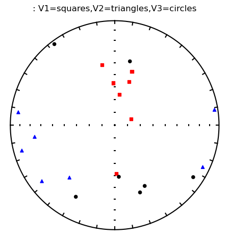
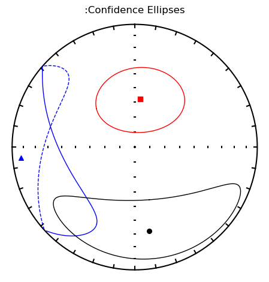
atrm_magic#
Anisotropy of thermal remanence (ATRM) is similar to anisotropy of anhysteretic remanence (AARM) and the procedure for obtaining the tensor is also similar. Therefore, the atrm_magic is quite similar to aarm_magic. However, the SIO lab procedures for the two experiments are somewhat different. In the ATRM experiment, there is a single, zero field step at the chosen temperature which is used as a baseline. We use only six positions (as opposed to nine for AARM) because of the additional risk of alteration at each temperature step. The positions are also different:
Image('data_files/Figures/atrm_meas.png',width=500)
{kind=link}
The file atrm_magic_example.dat in the data_files/atrm_magic directory is an SIO formatted data file containing ATRM measurement data done in a temperature of 520∘C. Note the special format of these files - the treatment column (column 2) has the temperature in centigrade followed by either a “00” for the obligatory zero field baseline step or a “10” for the first postion, and so on. These could also be ‘0‘ and ‘1’, etc..
Follow the instructions for sio_magic to import the ATRM data into the MagIC format. The DC field was 40 μT. The sample/site naming convention used option # 1 (see help menu) and the specimen and sample name are the same (specnum=0).
We will use ipmag.atrm_magic() to calculate the best-fit tensor and write out the MagIC tables which can be used to correct remanence data for the effects of remanent anisotropy.
convert.sio('atrm_magic_example.dat',dir_path='data_files/atrm_magic/',specnum=0,
location='unknown',codelist='T:ANI',samp_con='1',
meas_file='measurements.txt',labfield=40, phi=-1, theta=-1)
-I- overwriting /Users/hematite/Documents/GitHub/PmagPy/data_files/atrm_magic/specimens.txt
-I- 30 records written to specimens file
-I- overwriting /Users/hematite/Documents/GitHub/PmagPy/data_files/atrm_magic/samples.txt
-I- 30 records written to samples file
-I- overwriting /Users/hematite/Documents/GitHub/PmagPy/data_files/atrm_magic/sites.txt
-I- 10 records written to sites file
-I- overwriting /Users/hematite/Documents/GitHub/PmagPy/data_files/atrm_magic/locations.txt
-I- 1 records written to locations file
-I- overwriting /Users/hematite/Documents/GitHub/PmagPy/data_files/atrm_magic/measurements.txt
-I- 210 records written to measurements file
(True,
'/Users/hematite/Documents/GitHub/PmagPy/data_files/atrm_magic/measurements.txt')
help(ipmag.atrm_magic)
Help on function atrm_magic in module pmagpy.ipmag:
atrm_magic(meas_file, dir_path='.', input_dir_path='', input_spec_file='specimens.txt', output_spec_file='specimens.txt')
Converts ATRM data to best-fit tensor (6 elements plus sigma)
Parameters:
meas_file (str):
input measurement file
dir_path (str):
output directory, default "."
input_dir_path (str):
input file directory IF different from dir_path, default ""
input_spec_file (str):
input specimen file name, default "specimens.txt"
output_spec_file (str):
output specimen file name, default "specimens.txt"
Returns:
Tuple : (True or False indicating if conversion was successful, output file name written)
Info:
Input for is a series of ATRM measurements with optional alteration check
The order of the measurements is:
positions:
- labfield parallel to X
- labfield parallel to Y
- labfield parallel to Z
- labfield anti-parallel to X
- labfield anti-parallel to Y
- labfield anti-parallel to Z
- optional: labfield parallel to X
ipmag.atrm_magic('measurements.txt',dir_path='data_files/atrm_magic')
adding ATRM data for ak01a
adding ATRM data for ak01b
adding ATRM data for ak01c
adding ATRM data for ak01d
adding ATRM data for ak03a
adding ATRM data for ak03b
adding ATRM data for ak03c
adding ATRM data for ak04a
adding ATRM data for ak04b
adding ATRM data for ak04c
adding ATRM data for ak04d
adding ATRM data for cb01a
adding ATRM data for cb01b
adding ATRM data for cb01c
adding ATRM data for cb02a
adding ATRM data for cb02c
adding ATRM data for cb05a
adding ATRM data for cb05b
adding ATRM data for cb06a
adding ATRM data for cb06b
adding ATRM data for cb09a
adding ATRM data for cb09b
adding ATRM data for cb09w
adding ATRM data for cb09x
adding ATRM data for cb11a
adding ATRM data for cb11b
adding ATRM data for cb12a
adding ATRM data for cb12b
adding ATRM data for cb12w
adding ATRM data for cb12x
30 records written to file /Users/hematite/Documents/GitHub/PmagPy/data_files/atrm_magic/specimens.txt
angle#
[Essentials Appendix A.3.4] [command line version]
angle calculates the angle \(\alpha\) between two declination,inclination pairs.
There are several ways to use this function from the notebook - one loading the data into a Pandas dataframe, then converting to the desired arrays, or load directly into a Numpy array of desired shape.
help(pmag.angle)
Help on function angle in module pmagpy.pmag:
angle(D1, D2)
Calculate the angle between two directions.
Parameters
----------
D1 : Direction 1 as an array of [declination, inclination] pair or pairs
D2 : Direction 2 as an array of [declination, inclination] pair or pairs
Returns
-------
angle : single-element array
angle between the input directions
Examples
--------
>>> pmag.angle([350.0,10.0],[320.0,20.0])
array([ 30.59060998])
>>> pmag.angle([[350.0,10.0],[320.0,20.0]],[[345,13],[340,14]])
array([ 5.744522410794302, 20.026413431433475])
# Pandas way:
di=pd.read_csv('data_files/angle/angle.dat', sep=r"\s+", header=None)
#rename column headers
di.columns=['Dec1','Inc1','Dec2','Inc2']
Here’s the sort of data in the file:
di.head()
| Dec1 | Inc1 | Dec2 | Inc2 | |
|---|---|---|---|---|
| 0 | 11.2 | 32.9 | 6.4 | -42.9 |
| 1 | 11.5 | 63.7 | 10.5 | -55.4 |
| 2 | 11.9 | 31.4 | 358.1 | -71.8 |
| 3 | 349.6 | 36.2 | 356.3 | -45.0 |
| 4 | 60.3 | 63.5 | 58.9 | -56.6 |
Now we will use pmag.angle() to calculate the angles.
# call pmag.angle
pmag.angle(di[['Dec1','Inc1']].values,di[['Dec2','Inc2']].values)
array([ 75.92745192891205 , 119.1025127296956 , 103.65330599212074 ,
81.42586581987345 , 120.10485590235263 , 100.8579261997827 ,
95.07347774390598 , 74.10981614210887 , 78.41266977284762 ,
120.05285684329023 , 114.36156913809734 , 66.30664334660268 ,
85.38356936427427 , 95.07546203260317 , 93.84174000012183 ,
93.11663099831667 , 105.39087298983257 , 71.78167882899753 ,
104.04746652568936 , 93.84450444739515 , 93.2982733744556 ,
96.34377953716289 , 90.14271928648063 , 112.17559328487157 ,
90.06592091175148 , 120.0049301633127 , 75.316041231499 ,
86.1990224584522 , 85.85667798916327 , 82.64834933601456 ,
115.51261895583767 , 99.28623007373803 , 65.94667660195378 ,
90.55185268879333 , 90.5041885903135 , 84.49253198460524 ,
93.00731364883667 , 67.47153732610548 , 76.84279617134958 ,
83.80354000487057 , 128.3068144982206 , 91.69095399561142 ,
46.874412409911805, 110.66917836008615 , 103.69699188222263 ,
64.35444340804362 , 81.94448358712249 , 94.01817998387662 ,
121.19588845312292 , 83.64445512077187 , 113.72812351979076 ,
76.38276774059446 , 113.38742873753196 , 74.09024232460119 ,
79.42493098369492 , 74.92842387182175 , 90.5556630957226 ,
91.44844860819673 , 112.71773111267977 , 77.26775911648576 ,
77.06338144061586 , 62.41361128263387 , 88.42053202793153 ,
106.29965884408928 , 100.55759277868363 , 143.79308212332327 ,
104.9453737498128 , 91.83604986551077 , 96.21780531522532 ,
85.58941478967958 , 65.61977585680283 , 88.64226463894141 ,
75.64540867686256 , 93.36044833943944 , 101.25961804356123 ,
115.14897177748819 , 86.70974596701846 , 92.3299872832181 ,
91.89347431481632 , 102.39692203943784 , 78.93051946146736 ,
93.41996659446909 , 88.0899845743428 , 94.50358254789398 ,
76.96036419274866 , 110.40068515827002 , 89.2317978455828 ,
80.90505186698843 , 100.40590063202707 , 91.88885370883919 ,
107.05953781415998 , 115.81850229582638 , 111.29193119758595 ,
124.61718069231195 , 88.12341444694572 , 66.94129883744137 ,
99.90439898135507 , 76.73639991524554 , 71.37398957659131 ,
100.77896060389322 ])
Here is the other (equally valid) way using np.loadtext().
# Numpy way:
di=np.loadtxt('data_files/angle/angle.dat').transpose() # read in file
D1=di[0:2].transpose() # assign to first array
D2=di[2:].transpose() # assign to second array
pmag.angle(D1,D2) # call pmag.angle
array([ 75.92745192891205 , 119.1025127296956 , 103.65330599212074 ,
81.42586581987345 , 120.10485590235263 , 100.8579261997827 ,
95.07347774390598 , 74.10981614210887 , 78.41266977284762 ,
120.05285684329023 , 114.36156913809734 , 66.30664334660268 ,
85.38356936427427 , 95.07546203260317 , 93.84174000012183 ,
93.11663099831667 , 105.39087298983257 , 71.78167882899753 ,
104.04746652568936 , 93.84450444739515 , 93.2982733744556 ,
96.34377953716289 , 90.14271928648063 , 112.17559328487157 ,
90.06592091175148 , 120.0049301633127 , 75.316041231499 ,
86.1990224584522 , 85.85667798916327 , 82.64834933601456 ,
115.51261895583767 , 99.28623007373803 , 65.94667660195378 ,
90.55185268879333 , 90.5041885903135 , 84.49253198460524 ,
93.00731364883667 , 67.47153732610548 , 76.84279617134958 ,
83.80354000487057 , 128.3068144982206 , 91.69095399561142 ,
46.874412409911805, 110.66917836008615 , 103.69699188222263 ,
64.35444340804362 , 81.94448358712249 , 94.01817998387662 ,
121.19588845312292 , 83.64445512077187 , 113.72812351979076 ,
76.38276774059446 , 113.38742873753196 , 74.09024232460119 ,
79.42493098369492 , 74.92842387182175 , 90.5556630957226 ,
91.44844860819673 , 112.71773111267977 , 77.26775911648576 ,
77.06338144061586 , 62.41361128263387 , 88.42053202793153 ,
106.29965884408928 , 100.55759277868363 , 143.79308212332327 ,
104.9453737498128 , 91.83604986551077 , 96.21780531522532 ,
85.58941478967958 , 65.61977585680283 , 88.64226463894141 ,
75.64540867686256 , 93.36044833943944 , 101.25961804356123 ,
115.14897177748819 , 86.70974596701846 , 92.3299872832181 ,
91.89347431481632 , 102.39692203943784 , 78.93051946146736 ,
93.41996659446909 , 88.0899845743428 , 94.50358254789398 ,
76.96036419274866 , 110.40068515827002 , 89.2317978455828 ,
80.90505186698843 , 100.40590063202707 , 91.88885370883919 ,
107.05953781415998 , 115.81850229582638 , 111.29193119758595 ,
124.61718069231195 , 88.12341444694572 , 66.94129883744137 ,
99.90439898135507 , 76.73639991524554 , 71.37398957659131 ,
100.77896060389322 ])
You can always save your output using np.savetxt().
angles=pmag.angle(D1,D2) # assign the returned array to angles
apwp#
[Essentials Chapter 16] [command line version]
The program apwp calculates paleolatitude, declination, inclination from a pole latitude and longitude based on the paper Besse and Courtillot (2002; see Essentials Chapter 16 for complete discussion). Here we will calculate the expected direction for 100 million year old rocks at a locality in La Jolla Cove (Latitude: 33\(^{\circ}\)N, Longitude 117\(^{\circ}\)W). Assume that we are on the North American Plate! (Note that there IS no option for the Pacific plate in the program apwp, and that La Jolla was on the North American plate until a few million years ago (6?).
Within the notebook we will call pmag.apwp.
help(pmag.apwp)
Help on function apwp in module pmagpy.pmag:
apwp(data, print_results=False)
Calculates expected pole positions and directions for given plate, location and age.
Parameters
----------
data : [plate,lat,lon,age]
plate : [NA, SA, AF, IN, EU, AU, ANT, GL]
NA : North America
SA : South America
AF : Africa
IN : India
EU : Eurasia
AU : Australia
ANT: Antarctica
GL : Greenland
lat/lon : latitude/longitude in degrees N/E
age : age in millions of years
print_results : if True will print out nicely formatted results
Returns
-------
if print_results is False, [Age,Paleolat, Dec, Inc, Pole_lat, Pole_lon]
# here are the desired plate, latitude, longitude and age:
data=['NA',33,-117,100] # North American plate, lat and lon of San Diego at 100 Ma
pmag.apwp(data,print_results=True)
Age Paleolat. Dec. Inc. Pole_lat. Pole_Long.
100.0 38.8 352.4 58.1 81.5 198.3
b_vdm#
[Essentials Chapter 2] [command line version]
b_vdm converts geomagnetic field intensity observed at the earth’s surface at a particular (paleo)latitude and calculates the Virtual [Axial] Dipole Moment (vdm or vadm). We will call pmag.b_vdm() directly from within the notebook. [See also vdm_b.]
Here we use the function pmag.b_vdm() to convert an estimated paleofield value of 33 \(\mu\)T obtained from a lava flow at 22°N latitude to the equivalent Virtual Dipole Moment (VDM) in Am\(^2\).
help(pmag.b_vdm)
Help on function b_vdm in module pmagpy.pmag:
b_vdm(B, lat)
Converts a magnetic field value of list of values to virtual dipole moment (VDM)
or a virtual axial dipole moment (VADM).
Parameters
B: local magnetic field strength in tesla, as a value or list of values
lat: latitude of site in degrees
Returns
VDM or V(A)DM in units of Am^2
Examples
--------
>>> pmag.b_vdm(33e-6,22)*1e-21
71.58815974511788
print ('%7.1f'%(pmag.b_vdm(33e-6,22)*1e-21),' ZAm^2')
71.6 ZAm^2
pmag.b_vdm(33e-6,22)*1e-21
np.float64(71.58815974511788)
bootams#
[Essentials Chapter 13] [command line version]
bootams calculates bootstrap statistics for anisotropy tensor data in the form of:
x11 x22 x33 x12 x23 x13
It does this by selecting para-data sets and calculating the Hext average eigenparameters. It has an optional parametric bootstrap whereby the \(\sigma\) for the data set as a whole is used to draw new para data sets. The bootstrapped eigenparameters are assumed to be Kent distributed and the program calculates Kent error ellipses for each set of eigenvectors. It also estimates the standard deviations of the bootstrapped eigenvalues.
bootams reads in a file with data for the six tensor elements (x11 x22 x33 x12 x23 x13) for specimens, calls pmag.s_boot() using a parametric or non-parametric bootstrap as desired. If all that is desired is the bootstrapped eigenparameters, pmag.s_boot() has all we need, but if the Kent ellipses are required, and we can call pmag.sbootpars() to calculated these more derived products and print them out.
Note that every time the bootstrap program gets called, the output will be slightly different because this depends on calls to random number generators. If the answers are different by a lot, then the number of bootstrap calculations is too low. The number of bootstraps can be changed with the nb option below.
We can do all this from within the notebook as follows:
help(pmag.s_boot)
Help on function s_boot in module pmagpy.pmag:
s_boot(Ss, ipar=0, nb=1000, random_seed=None)
Returns bootstrap parameters for S data.
Parameters
----------
Ss : nested array of [[x11 x22 x33 x12 x23 x13],....] data
ipar : if True, do a parametric bootstrap
nb : number of bootstraps
random_seed : None, int, or numpy.random.Generator
Seed for reproducible random number generation (default is None).
Returns
-------
Tmean : average eigenvalues
Vmean : average eigvectors
Taus : bootstrapped eigenvalues
Vs : bootstrapped eigenvectors
Examples
--------
>>> Ss = [[0.33586472,0.32757074,0.33656454,0.0056526,0.00449771,-0.00036542], [0.33815295,0.32601482,0.33583224,0.00754076,0.00405271,-0.0001627],
[0.33806428,0.32925552,0.33268023,0.00480824,-0.00168595,0.0009308], [0.33939844,0.32750368,0.33309788,0.00763409,0.00264978,0.00070303],
[0.3348785,0.32816416,0.33695734,0.00574405,0.00278172,-0.00073475], [0.33485019,0.32948497,0.33566481,0.00597801,0.00426423,-0.00040056]]
>>> pmag.s_boot(Ss,0,2)
([0.34040287, 0.3353659, 0.32423124],
[[29.594002551414974, 14.457521581993113],
[166.31028417625646, 70.4972100801602],
[296.2343306258123, 12.805665338949966]],
[[0.34002233, 0.33413905, 0.32583863], [0.34043044, 0.33551994, 0.32404962]],
[[[26.298051965057486, 5.235004519419732],
[183.15464080261913, 84.30971842978398],
[296.0941733228108, 2.224044816930646]],
[[28.798353815000212, 14.686330248560294],
[166.21187481069492, 70.40546729047502],
[295.4174263407004, 12.681162985818712]]])
So we will:
read in the AMS tensor data
get the bootstrapped eigenparameters
print out the formatted results
Ss=np.loadtxt('data_files/bootams/bootams_example.dat')
Tmean,Vmean,Taus,Vs=pmag.s_boot(Ss) # get the bootstrapped eigenparameters
bpars=pmag.sbootpars(Taus,Vs) # calculate kent parameters for bootstrap
print("""tau tau_sigma V_dec V_inc V_eta V_eta_dec V_eta_inc V_zeta V_zeta_dec V_zeta_inc
""")
outstring='%7.5f %7.5f %7.1f %7.1f %7.1f %7.1f %7.1f %7.1f %7.1f %7.1f'%(\
Tmean[0],bpars["t1_sigma"],Vmean[0][0],Vmean[0][1],\
bpars["v1_zeta"],bpars["v1_zeta_dec"],bpars["v1_zeta_inc"],\
bpars["v1_eta"],bpars["v1_eta_dec"],bpars["v1_eta_inc"])
print(outstring)
outstring='%7.5f %7.5f %7.1f %7.1f %7.1f %7.1f %7.1f %7.1f %7.1f %7.1f'%(\
Tmean[1],bpars["t2_sigma"],Vmean[1][0],Vmean[1][1],\
bpars["v2_zeta"],bpars["v2_zeta_dec"],bpars["v2_zeta_inc"],\
bpars["v2_eta"],bpars["v2_eta_dec"],bpars["v2_eta_inc"])
print(outstring)
outstring='%7.5f %7.5f %7.1f %7.1f %7.1f %7.1f %7.1f %7.1f %7.1f %7.1f'%(\
Tmean[2],bpars["t3_sigma"],Vmean[2][0],Vmean[2][1],\
bpars["v3_zeta"],bpars["v3_zeta_dec"],bpars["v3_zeta_inc"],\
bpars["v3_eta"],bpars["v3_eta_dec"],bpars["v3_eta_inc"])
print(outstring)
tau tau_sigma V_dec V_inc V_eta V_eta_dec V_eta_inc V_zeta V_zeta_dec V_zeta_inc
0.33505 0.00020 5.3 14.7 13.0 113.2 49.9 10.0 264.2 36.4
0.33334 0.00019 124.5 61.7 16.8 319.2 27.5 5.6 225.9 6.3
0.33161 0.00014 268.8 23.6 12.3 107.8 65.1 10.4 1.6 7.4
# with parametric bootstrap:
Ss=np.loadtxt('data_files/bootams/bootams_example.dat')
Tmean,Vmean,Taus,Vs=pmag.s_boot(Ss,ipar=1,nb=5000) # get the bootstrapped eigenparameters
bpars=pmag.sbootpars(Taus,Vs) # calculate kent parameters for bootstrap
print("""tau tau_sigma V_dec V_inc V_eta V_eta_dec V_eta_inc V_zeta V_zeta_dec V_zeta_inc
""")
outstring='%7.5f %7.5f %7.1f %7.1f %7.1f %7.1f %7.1f %7.1f %7.1f %7.1f'%(\
Tmean[0],bpars["t1_sigma"],Vmean[0][0],Vmean[0][1],\
bpars["v1_zeta"],bpars["v1_zeta_dec"],bpars["v1_zeta_inc"],\
bpars["v1_eta"],bpars["v1_eta_dec"],bpars["v1_eta_inc"])
print(outstring)
outstring='%7.5f %7.5f %7.1f %7.1f %7.1f %7.1f %7.1f %7.1f %7.1f %7.1f'%(\
Tmean[1],bpars["t2_sigma"],Vmean[1][0],Vmean[1][1],\
bpars["v2_zeta"],bpars["v2_zeta_dec"],bpars["v2_zeta_inc"],\
bpars["v2_eta"],bpars["v2_eta_dec"],bpars["v2_eta_inc"])
print(outstring)
outstring='%7.5f %7.5f %7.1f %7.1f %7.1f %7.1f %7.1f %7.1f %7.1f %7.1f'%(\
Tmean[2],bpars["t3_sigma"],Vmean[2][0],Vmean[2][1],\
bpars["v3_zeta"],bpars["v3_zeta_dec"],bpars["v3_zeta_inc"],\
bpars["v3_eta"],bpars["v3_eta_dec"],bpars["v3_eta_inc"])
print(outstring)
tau tau_sigma V_dec V_inc V_eta V_eta_dec V_eta_inc V_zeta V_zeta_dec V_zeta_inc
0.33505 0.00021 5.3 14.7 22.6 117.4 56.3 10.1 266.9 29.8
0.33334 0.00022 124.5 61.7 23.4 336.4 23.6 19.3 240.7 12.9
0.33161 0.00026 268.8 23.6 20.0 133.2 59.4 10.5 7.2 19.1
cart_dir#
[Essentials Chapter 2] [command line version]
cart_dir converts cartesian coordinates (X,Y,Z) to polar coordinates (Declination, Inclination, Intensity). We will call pmag.cart2dir().
help(pmag.cart2dir)
Help on function cart2dir in module pmagpy.pmag:
cart2dir(cart)
Converts a direction in cartesian coordinates into declinations and inclination.
Parameters
----------
cart : list of [x,y,z] or list of lists [[x1,y1,z1],[x2,y2,z2]...]
Returns
-------
direction_array : array of [declination, inclination, intensity]
Examples
--------
>>> pmag.cart2dir([0,1,0])
array([ 90., 0., 1.])
# read in data file from example file
cart=np.loadtxt('data_files/cart_dir/cart_dir_example.dat')
print ('Input: \n',cart) # print out the cartesian coordinates
# print out the results
dirs = pmag.cart2dir(cart)
print ("Output: ")
for d in dirs:
print ('%7.1f %7.1f %8.3e'%(d[0],d[1],d[2]))
Input:
[[ 0.3971 -0.1445 0.9063]
[-0.5722 0.04 -0.8192]]
Output:
340.0 65.0 1.000e+00
176.0 -55.0 1.000e+00
di_eq#
[Essentials Appendix B] [command line version]
Paleomagnetic data are frequently plotted in equal area projection. PmagPy has several plotting options which do this (e.g., eqarea, but occasionally it is handy to be able to convert the directions to X,Y coordinates directly, without plotting them at all. Here is an example transcript of a session using the datafile di_eq_example.dat:
The program di_eq program calls pmag.dimap() which we can do from within a Jupyter notebook.
help(pmag.dimap)
Help on function dimap in module pmagpy.pmag:
dimap(D, I)
Function to map directions to x,y pairs in equal area projection.
Parameters
----------
D : list or array of declinations (as float)
I : list or array or inclinations (as float)
Returns
-------
XY : x, y values of directions for equal area projection [x,y]
DIs=np.loadtxt('data_files/di_eq/di_eq_example.dat').transpose() # load in the data
print (pmag.dimap(DIs[0],DIs[1])) # call the function
[[-0.239410246726454 -0.893491204635728]
[ 0.43641303103711 0.712161340982897]
[ 0.063844216333699 0.760300494699076]
[ 0.321447089985745 0.686216056919847]
[ 0.322719926465939 0.670562477292019]
[ 0.40741223141123 0.540654291959088]
[ 0.580156197965772 0.340375619675307]
[ 0.105350890091248 0.657727583773614]
[ 0.247173076245911 0.599686833302561]
[ 0.182349076131709 0.615600164182434]
[ 0.174815070186047 0.601717418322389]
[ 0.282746000006373 0.545472330043217]
[ 0.264863147796004 0.538272991570854]
[ 0.235758380478676 0.534535804147291]
[ 0.290665090097181 0.505482084190786]
[ 0.260629054517158 0.511513320435249]
[ 0.232089826300174 0.516423284008805]
[ 0.244448388352784 0.505665778457508]
[ 0.277926522878077 0.464381380649951]
[ 0.250510302009082 0.477151812372957]
[ 0.291770036871037 0.440816440147079]
[ 0.108769487035437 0.516148206033583]
[ 0.196706458393983 0.482014462236025]
[ 0.349389953278067 0.38129222620055 ]
[ 0.168406801194016 0.475566135914593]
[ 0.206285861983076 0.446443509246407]
[ 0.175700815230645 0.450649287593256]
[ 0.301103809085031 0.378539367880683]
[ 0.204954965076977 0.423969708545639]
[ 0.199754730751726 0.42258440000015 ]
[ 0.346919991690539 0.308009981708959]
[ 0.119029885607341 0.441144367939582]
[ 0.239847938725944 0.376485850119473]
[ 0.269528430306644 0.342509539736692]
[ 0.085450914279173 0.423789311099072]
[ 0.192223989805583 0.387232716458973]
[ 0.172607773570199 0.395083583747565]
[ 0.272008463720247 0.320741371092207]
[ 0.39398077063306 0.117450768822735]
[-0.017726445513358 0.406002352044979]
[ 0.154272684418201 0.367000213756199]
[ 0.213902758532676 0.335760074974386]
[ 0.103220763284864 0.372202048090602]
[ 0.231833489652839 0.283245175229779]
[ 0.072160416685248 0.35153813896023 ]
[ 0.00780195711033 0.319235890376745]
[ 0.152583028215554 0.265350018775054]
[ 0.248133323834759 0.136412449142214]]
di_geo#
[Essentials Chapter 9] and Changing coordinate systems [command line version]
Here we will convert D = 8.1,I = 45.2 from specimen coordinates to geographic-adjusted coordinates. The orientation of laboratory arrow on the specimen was: azimuth = 347; plunge = 27. To do this we will call pmag.dogeo(). There is also pmag.dogeo_V for arrays of data.
So let’s start with pmag.dogeo().
help(pmag.dogeo)
Help on function dogeo in module pmagpy.pmag:
dogeo(dec, inc, az, pl)
Rotates declination and inclination into geographic coordinates using the
azimuth and plunge of the X direction (lab arrow) of a specimen.
Parameters
----------
dec : declination in specimen coordinates
inc : inclination in specimen coordinates
Returns
-------
rotated_direction : tuple of declination, inclination in geographic coordinates
Examples
--------
>>> pmag.dogeo(0.0,90.0,0.0,45.5)
(180.0, 44.5)
pmag.dogeo(dec=81,inc=45.2,az=347,pl=27)
(np.float64(94.83548541337562), np.float64(43.02168490109632))
Now let’s check out the version that takes many data points at once.
help(pmag.dogeo_V)
Help on function dogeo_V in module pmagpy.pmag:
dogeo_V(indat)
Rotates declination and inclination into geographic coordinates using the
azimuth and plunge of the X direction (lab arrow) of a specimen.
Parameters
----------
indat : array of lists
data format: [dec, inc, az, pl]
Returns
-------
two arrays :
an array of declinations
an array of inclinations
Examples
--------
>>> pmag.dogeo_V(np.array([[0.0,90.0,0.0,45.5],[0.0,90.0,0.0,45.5]]))
(array([180., 180.]), array([44.5, 44.5]))
indata=np.loadtxt('data_files/di_geo/di_geo_example.dat')
print (indata)
[[ 288.1 35.8 67. -36. ]
[ 256.8 22.5 84. -81. ]
[ 262.4 19.1 91. -48. ]
[ 258.6 19.6 89. -61. ]
[ 259.9 54.7 49. -76. ]
[ 279.1 27.9 62. -41. ]
[ 228.3 -47.5 141. -84. ]
[ 249.8 25. 60. -82. ]
[ 239.8 -33.9 108. -91. ]
[ 271.7 50.8 28. -52. ]
[ 266.8 67.1 16. -67. ]
[ 238.9 51.9 27. -76. ]
[ 238.9 55.3 17. -90. ]
[ 252.6 41. 43. -73. ]
[ 112.7 17.1 282.6 -78. ]
[ 134.9 -8.9 234. -56. ]
[ 138.6 -1.1 244.6 -73. ]
[ 83.5 31.1 292. -28. ]
[ 151.1 -35.2 196.6 -69. ]
[ 146.8 -14.5 217. -51. ]
[ 13.8 35. 332.6 -44. ]
[ 293.1 3.9 53.5 -25.5]
[ 99.5 -11. 243.6 -30. ]
[ 267.8 -12.7 91.5 -49. ]
[ 47. 12.8 298.6 -28. ]
[ 45.8 -9. 297. -33.5]
[ 81.7 -26.8 254.6 -51. ]
[ 79.7 -25.7 256. -60. ]
[ 84.7 -20.9 256.6 -60. ]
[ 303.3 66.7 3.6 -71.5]
[ 104.6 32.2 297. -100.5]
[ 262.8 77.9 357.1 -87. ]
[ 63.3 53.2 316. -63. ]
[ 37.7 60.1 331.6 -57. ]
[ 109.3 5.4 255.6 -58.5]
[ 119.3 5.5 252.6 -52. ]
[ 108.7 23.6 287.6 -79. ]]
Let’s take a look at these data in equal area projection: (see eqarea for details)
ipmag.plot_net(1)
ipmag.plot_di(dec=indata.transpose()[0],inc=indata.transpose()[1],color='red',edge='black')
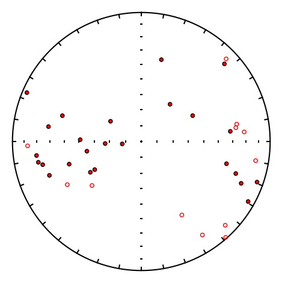
The data are highly scattered and we hope that the geographic coordinate system looks better! To find out try:
decs,incs=pmag.dogeo_V(indata)
ipmag.plot_net(1)
ipmag.plot_di(dec=decs,inc=incs,color='red',edge='black')
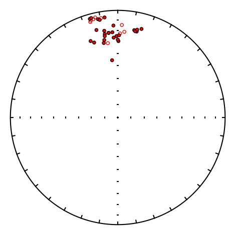
These data are clearly much better grouped.
And here they are printed out.
print(np.column_stack([decs,incs]))
[[ 1.239079660009729e+01 1.897354242111950e+01]
[ 1.498307324661659e+01 1.555933730147452e+01]
[ 1.066678186282469e+01 1.816933423652769e+01]
[ 1.140475530326100e+01 1.899516324365169e+01]
[ 1.244831627581986e+01 1.720362034792245e+01]
[ 3.572990711276224e+02 1.515615798465250e+01]
[ 3.538832806455590e+02 2.170912081356116e+01]
[ 3.537891957478963e+02 2.163657271719043e+01]
[ 3.405037772385433e+02 2.528892752812575e+01]
[ 3.425639744051680e+02 2.753745185003489e+01]
[ 3.511646680722434e+02 2.232938052219719e+01]
[ 3.494153846729620e+02 2.997546268430149e+01]
[ 3.463359829213437e+02 1.710069070047924e+01]
[ 3.509379702995217e+02 2.405670149485947e+01]
[ 3.591469095646697e+02 2.495589897617651e+01]
[ 5.208120640190732e-01 2.944812111745484e+01]
[ 3.543682651331042e+02 4.536441333868400e+01]
[ 9.116263010883184e-01 2.424032930581017e+01]
[ 3.501704585666012e+02 2.747045635919626e+01]
[ 3.542493623278697e-02 2.816456054867226e+01]
[ 3.439813887924970e+02 -8.048365912881662e+00]
[ 3.461309065934317e+02 -6.149596009252537e+00]
[ 3.472832778059016e+02 -4.832198500414617e+00]
[ 3.504431701927762e+02 -6.659532741384513e+00]
[ 3.444959969004329e+02 -6.696292600602042e+00]
[ 3.524338922632455e+02 -3.069729144393546e+01]
[ 1.557097344915957e+00 -2.257434594054589e+01]
[ 4.404917086765674e+00 -2.087674819546375e+01]
[ 2.546719447069432e+00 -1.466108624132701e+01]
[ 3.442210551169844e+02 4.903973678153704e+00]
[ 3.524985295723664e+02 6.466292121087898e+00]
[ 3.450601731999597e+02 4.439672683412344e+00]
[ 3.486355239608441e+02 7.106129653159337e+00]
[ 3.495345844190660e+02 8.126630132405785e+00]
[ 3.511732158101934e+02 1.925242620629703e+01]
[ 3.570928973912054e+02 2.628725530614494e+01]
[ 3.563848654642317e+02 2.139466560502134e+01]]
di_rot#
[Essentials Chapter 11] [command line version]
di_rot rotates dec inc pairs to a new origin. We can call pmag.dodirot() for single [dec,inc,Dbar,Ibar] data or pmag.dodirot_V() for an array of Dec, Inc pairs. We can use the data from the di_geo example and rotate the geographic coordinate data such that the center of the distribution is the principal direction.
We do it like this:
read in a data set with dec inc pairs
make an equal area projection of the data to remind us what they look like
calculate the principal component with pmag.doprinc())
rotate the data to the principal direction
plot the rotated data in an equal area projection.
di_block=np.loadtxt('data_files/di_rot/di_rot_example.txt') # read in some data
ipmag.plot_net(1) # make the plot
ipmag.plot_di(di_block=di_block,title='geographic',color='red',edge='black')
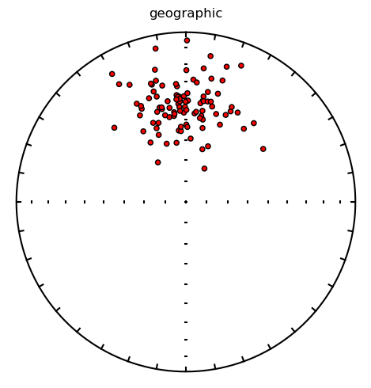
Now we calculate the principal direction using the method described inthe goprinc section.
princ=pmag.doprinc(di_block)
And note we use pmag.dodirot_V to do the rotation.
help(pmag.dodirot_V)
Help on function dodirot_V in module pmagpy.pmag:
dodirot_V(di_array, Dbar, Ibar)
Rotate an array of declination, inclination pairs by the difference between
dec = 0 and inc = 90 and the provided desired mean direction
Parameters
----------
di_array : numpy array of [[Dec1,Inc1],[Dec2,Inc2],....]
Dbar : declination of desired mean
Ibar : declination of desired mean
Returns
-------
array
Rotated decs and incs: [[rot_Dec1,rot_Inc1],[rot_Dec2,rot_Inc2],....]
Examples
--------
>>> di_array = np.array([[0,90],[0,90],[0,90]])
>>> pmag.dodirot_V(di_array,5,15)
array([[ 5. , 15.000000000000002],
[ 5. , 15.000000000000002],
[ 5. , 15.000000000000002]])
rot_block=pmag.dodirot_V(di_block,princ['dec'],princ['inc'])
rot_block
array([[354.75645821939304 , 85.48653153602552 ],
[ 7.996325028841369, 76.34238986058352 ],
[218.5930945649905 , 71.32523703910688 ],
[256.72254093688673 , 81.27575860325726 ],
[ 36.92916126610703 , 71.27696635573852 ],
[107.06274810301437 , 74.65934146800458 ],
[149.72796903485533 , 84.48123414864426 ],
[ 98.10291565896432 , 69.64631259998298 ],
[348.2916129500338 , 72.10250018331234 ],
[285.08151847346653 , 74.70297917553054 ],
[273.35642945859587 , 68.89864851548164 ],
[330.2891082414394 , 88.29039388218094 ],
[280.73571259154653 , 70.61791031996144 ],
[ 3.711243870612208, 76.11478559726586 ],
[ 42.78313341175328 , 81.09119603852804 ],
[264.9203746178965 , 82.3673404685105 ],
[228.29288414865738 , 88.01160809140436 ],
[ 55.75081264851161 , 80.37175049620849 ],
[ 43.327076367977895, 84.27753112231453 ],
[271.79063107651484 , 77.21159273624666 ],
[104.8489977583381 , 83.0887792255852 ],
[139.82061836611177 , 76.3993490997727 ],
[228.41478454067112 , 68.21812033245911 ],
[184.94964644285704 , 85.8780572975651 ],
[290.1210027482958 , 80.82170974067176 ],
[164.81453236149315 , 80.16691248786324 ],
[ 40.09107583722127 , 66.25110527121076 ],
[298.4449268807663 , 70.85449531698555 ],
[229.95810882452545 , 87.16480710812498 ],
[341.3620913135976 , 56.495045573148374],
[161.4027805997556 , 55.85892510658795 ],
[243.45576845436577 , 80.16805823340704 ],
[ 92.95291456386707 , 87.97685439598281 ],
[277.0303939010871 , 57.709520772060856],
[236.25509447512627 , 77.3333120118741 ],
[217.34511494459414 , 61.355453068467035],
[ 79.43533762088134 , 70.47284374034713 ],
[128.52228098345978 , 52.95597767114727 ],
[305.3580388009756 , 79.90489952465713 ],
[ 74.18496799717906 , 78.12469469085295 ],
[ 21.274669266693564, 68.81257393353874 ],
[ 23.496563058028272, 59.06513099461031 ],
[ 44.65570708622434 , 87.79057524363576 ],
[ 57.60260544366341 , 74.02521329994752 ],
[120.82174991260183 , 58.86801900710946 ],
[149.68771685446677 , 67.14842720400075 ],
[121.72422638549648 , 75.2791812472184 ],
[181.82291633194342 , 53.555936677710434],
[ 33.34840452306929 , 82.71868636819391 ],
[135.24107165626918 , 88.10701921706708 ],
[312.7120547177845 , 82.96349887795108 ],
[245.36645021766134 , 73.64842748448285 ],
[ 36.71037036165424 , 83.69777543532396 ],
[ 88.92589841563097 , 71.82553940904472 ],
[303.7629234771758 , 82.95952847397729 ],
[ 46.325272180993096, 73.32388993641693 ],
[ 8.735343522453576, 70.19628754186267 ],
[131.53682149960684 , 72.47500848351858 ],
[272.34524655039434 , 65.75867311340127 ],
[257.66968141631367 , 80.83680899242562 ],
[ 77.32702941137563 , 80.5605072949047 ],
[121.94427364936706 , 63.58296413110848 ],
[330.03559662955513 , 66.08337505918838 ],
[ 51.004478037623386, 75.78428319548763 ],
[202.41794483205925 , 68.43613924613744 ],
[132.25871641548747 , 71.76054597908482 ],
[291.4527802722031 , 48.822527990739104],
[ 93.69827492762727 , 71.57753859504861 ],
[351.6954522950097 , 79.3096286768353 ],
[337.44083997078724 , 65.69494318172546 ],
[266.9594875280754 , 68.62351083692984 ],
[ 83.63011899609319 , 79.65111205803018 ],
[350.24134591940657 , 78.0484729985674 ],
[197.963506346118 , 83.98150407079558 ],
[197.71481284017014 , 76.14348772683442 ],
[310.55033704545906 , 78.23192585490966 ],
[ 78.77356326878538 , 58.02447288772322 ],
[259.60162483532565 , 79.15809286714797 ],
[286.7710646738233 , 60.86301321667649 ],
[205.76280361418037 , 76.95727379747062 ],
[156.1329808482638 , 85.59867107186719 ],
[164.45839371020577 , 78.82453194965498 ],
[ 56.73345516633151 , 68.17101813911009 ],
[333.84210333166703 , 86.5713552721209 ],
[148.52724727398385 , 85.55221936408121 ],
[222.19677177385248 , 88.3541553504907 ],
[260.3277213665519 , 77.73774990441703 ],
[112.97103002138522 , 77.71005598912365 ],
[ 20.057036243123406, 86.20899093394533 ],
[322.975676456988 , 75.06538152536162 ],
[222.26720753183264 , 55.7333080390167 ],
[139.90526593929013 , 72.40397415579847 ],
[312.4892604821986 , 79.6564749109274 ],
[200.9750306553203 , 60.43114046544246 ],
[ 82.81519452419002 , 80.55563806670666 ],
[ 4.478910631839454, 78.31133276346624 ],
[152.93461274838006 , 86.9201173015137 ],
[130.61844695081186 , 86.22975549409624 ],
[ 73.38056923717943 , 83.81526148585854 ],
[183.81900155532608 , 71.53579093232432 ]])
And of course look at what we have done!
ipmag.plot_net(1) # make the plot
ipmag.plot_di(di_block=rot_block,color='red',title='rotated',edge='black')
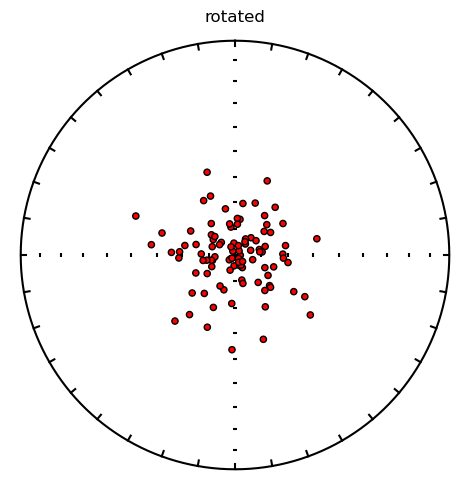
di_tilt#
[Essentials Chapter 9] [Changing coordinate systems] [command line version]
di_tilt can rotate a direction of Declination = 5.3 and Inclination = 71.6 to “stratigraphic” coordinates, assuming the strike was 135 and the dip was 21. The convention in this program is to use the dip direction, which is to the “right” of this strike.
We can perform this calculation by calling pmag.dotilt or pmag.dotilt_V() depending on if we have a single point or an array to rotate.
help(pmag.dotilt)
Help on function dotilt in module pmagpy.pmag:
dotilt(dec, inc, bed_az, bed_dip)
Does a tilt correction on a direction (dec,inc) using bedding dip direction
and bedding dip.
Parameters
----------
dec : declination directions in degrees
inc : inclination direction in degrees
bed_az : bedding dip direction
bed_dip : bedding dip
Returns
-------
dec,inc : a tuple of rotated dec, inc values
Examples
--------
>>> pmag.dotilt(91.2,43.1,90.0,20.0)
(90.952568837153436, 23.103411670066617)
help(pmag.dotilt_V)
Help on function dotilt_V in module pmagpy.pmag:
dotilt_V(indat)
Does a tilt correction on an array with rows of [dec, inc, bedding dip direction, bedding dip].
Parameters
----------
indat : nested array of [[dec1, inc1, bed_az1, bed_dip1],[dec2,inc2,bed_az2,bed_dip2]...]
declination, inclination, bedding dip direction and bedding dip
Returns
-------
dec, inc : arrays of rotated declination, inclination
Examples
--------
>>> pmag.dotilt_V(np.array([[91.2,43.1,90.0,20.0],[92.0,40.4,90.5,21.3]]))
(array([90.95256883715344, 91.70884991139725]),
array([23.103411670066613, 19.105747819853423]))
# read in some data
data=np.loadtxt('data_files/di_tilt/di_tilt_example.dat') # load up the data
di_block=data[:,[0,1]] # let's look at the data first!
ipmag.plot_net(1)
ipmag.plot_di(di_block=di_block)
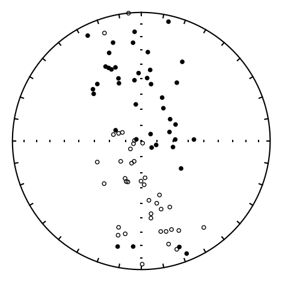
Now we can rotate them
data
array([[ 9.700e+00, 5.300e+01, 1.050e+02, 2.200e+01],
[ 3.170e+02, 4.420e+01, 1.050e+02, 2.200e+01],
[ 3.331e+02, 8.900e+00, 1.050e+02, 2.200e+01],
[ 3.543e+02, -1.000e-01, 1.050e+02, 2.200e+01],
[ 3.389e+02, 5.020e+01, 1.050e+02, 2.200e+01],
[ 3.552e+02, 2.430e+01, 1.050e+02, 2.200e+01],
[ 3.374e+02, 3.950e+01, 1.050e+02, 2.200e+01],
[ 3.224e+02, 4.340e+01, 1.050e+02, 2.200e+01],
[ 3.412e+02, -1.230e+01, 1.050e+02, 2.200e+01],
[ 3.565e+02, 1.600e+01, 1.050e+02, 2.200e+01],
[ 3.360e+02, 3.780e+01, 1.050e+02, 2.200e+01],
[ 3.407e+02, 3.920e+01, 1.050e+02, 2.200e+01],
[ 3.148e+02, 4.680e+01, 1.050e+02, 2.200e+01],
[ 4.200e+00, 3.130e+01, 1.050e+02, 2.200e+01],
[ 3.440e+02, 2.150e+01, 1.050e+02, 2.200e+01],
[ 5.300e+00, 4.930e+01, 1.050e+02, 2.200e+01],
[ 7.100e+00, 4.360e+01, 1.050e+02, 2.200e+01],
[ 3.400e+02, 2.790e+01, 1.050e+02, 2.200e+01],
[ 3.344e+02, 3.600e+01, 1.050e+02, 2.200e+01],
[ 1.280e+01, 5.400e+00, 1.050e+02, 2.200e+01],
[ 1.898e+02, -2.760e+01, 1.050e+02, 2.200e+01],
[ 1.614e+02, -5.350e+01, 1.050e+02, 2.200e+01],
[ 1.442e+02, -1.820e+01, 1.050e+02, 2.200e+01],
[ 1.727e+02, -5.160e+01, 1.050e+02, 2.200e+01],
[ 1.844e+02, 1.880e+01, 1.050e+02, 2.200e+01],
[ 1.612e+02, -2.810e+01, 1.050e+02, 2.200e+01],
[ 1.729e+02, -3.940e+01, 1.050e+02, 2.200e+01],
[ 1.796e+02, -4.700e+00, 1.050e+02, 2.200e+01],
[ 1.638e+02, -4.410e+01, 1.050e+02, 2.200e+01],
[ 1.603e+02, 1.350e+01, 1.050e+02, 2.200e+01],
[ 1.679e+02, -2.880e+01, 1.050e+02, 2.200e+01],
[ 1.724e+02, -4.240e+01, 1.050e+02, 2.200e+01],
[ 1.581e+02, 6.300e+00, 1.050e+02, 2.200e+01],
[ 1.938e+02, -2.550e+01, 1.050e+02, 2.200e+01],
[ 1.647e+02, -2.790e+01, 1.050e+02, 2.200e+01],
[ 1.567e+02, -4.340e+01, 1.050e+02, 2.200e+01],
[ 1.652e+02, -1.820e+01, 1.050e+02, 2.200e+01],
[ 1.926e+02, 1.700e+01, 1.050e+02, 2.200e+01],
[ 1.573e+02, -2.550e+01, 1.050e+02, 2.200e+01],
[ 1.619e+02, -1.240e+01, 1.050e+02, 2.200e+01],
[ 6.420e+01, 6.590e+01, 3.400e+02, 4.000e+01],
[ 1.225e+02, 8.230e+01, 3.400e+02, 4.000e+01],
[ 1.049e+02, 8.030e+01, 3.400e+02, 4.000e+01],
[ 5.280e+01, 6.710e+01, 3.400e+02, 4.000e+01],
[ 3.400e+02, 4.700e+01, 3.400e+02, 4.000e+01],
[ 2.886e+02, 8.670e+01, 3.400e+02, 4.000e+01],
[ 2.560e+01, 5.930e+01, 3.400e+02, 4.000e+01],
[ 3.130e+01, 4.590e+01, 3.400e+02, 4.000e+01],
[ 2.928e+02, 7.240e+01, 3.400e+02, 4.000e+01],
[ 1.008e+02, 6.960e+01, 3.400e+02, 4.000e+01],
[ 8.750e+01, 6.850e+01, 3.400e+02, 4.000e+01],
[ 3.536e+02, 5.070e+01, 3.400e+02, 4.000e+01],
[ 3.515e+02, 6.650e+01, 3.400e+02, 4.000e+01],
[ 5.320e+01, 8.270e+01, 3.400e+02, 4.000e+01],
[ 3.577e+02, 4.610e+01, 3.400e+02, 4.000e+01],
[ 3.390e+01, 6.490e+01, 3.400e+02, 4.000e+01],
[ 1.247e+02, 5.920e+01, 3.400e+02, 4.000e+01],
[ 7.220e+01, 7.130e+01, 3.400e+02, 4.000e+01],
[ 8.840e+01, 5.640e+01, 3.400e+02, 4.000e+01],
[ 2.730e+01, 3.130e+01, 3.400e+02, 4.000e+01],
[ 1.483e+02, -8.840e+01, 3.400e+02, 4.000e+01],
[ 1.661e+02, -4.870e+01, 3.400e+02, 4.000e+01],
[ 2.509e+02, -8.480e+01, 3.400e+02, 4.000e+01],
[ 2.036e+02, -7.470e+01, 3.400e+02, 4.000e+01],
[ 1.804e+02, -6.450e+01, 3.400e+02, 4.000e+01],
[ 2.444e+02, -5.890e+01, 3.400e+02, 4.000e+01],
[ 1.947e+02, -3.120e+01, 3.400e+02, 4.000e+01],
[ 1.763e+02, -6.210e+01, 3.400e+02, 4.000e+01],
[ 2.743e+02, -8.570e+01, 3.400e+02, 4.000e+01],
[ 1.981e+02, -6.260e+01, 3.400e+02, 4.000e+01],
[ 2.004e+02, -6.250e+01, 3.400e+02, 4.000e+01],
[ 2.034e+02, -6.410e+01, 3.400e+02, 4.000e+01],
[ 2.339e+02, -8.150e+01, 3.400e+02, 4.000e+01],
[ 1.993e+02, -7.640e+01, 3.400e+02, 4.000e+01],
[ 2.944e+02, -7.690e+01, 3.400e+02, 4.000e+01],
[ 2.210e+02, -5.380e+01, 3.400e+02, 4.000e+01],
[ 2.830e+02, -7.190e+01, 3.400e+02, 4.000e+01],
[ 1.742e+02, -6.650e+01, 3.400e+02, 4.000e+01],
[ 2.887e+02, -7.490e+01, 3.400e+02, 4.000e+01],
[ 2.253e+02, -7.170e+01, 3.400e+02, 4.000e+01]])
Dt,It=pmag.dotilt_V(data) # rotate them
ipmag.plot_net(1) # and take another look
ipmag.plot_di(dec=Dt,inc=It)
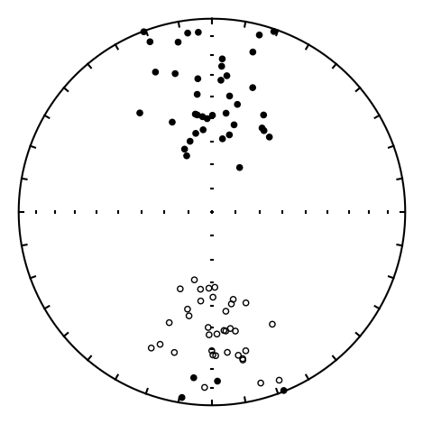
Use the handy function np.column_stack to pair the decs and incs together
np.column_stack((Dt,It)) # if you want to see the output:
array([[ 3.745246730099765e+01, 4.957949712575954e+01],
[ 3.364675200511666e+02, 6.094472029374622e+01],
[ 3.380165616749129e+02, 2.299229368853451e+01],
[ 3.556562478331330e+02, 7.515567388054662e+00],
[ 8.176956970670972e+00, 5.860794868547369e+01],
[ 6.243125433301561e+00, 2.981496424107194e+01],
[ 3.570337330966181e+02, 5.000739210914991e+01],
[ 3.428111070363000e+02, 5.857022740098239e+01],
[ 3.392844137567167e+02, 3.489421627411824e-01],
[ 3.857574313600920e+00, 2.170490617560062e+01],
[ 3.543476226628997e+02, 4.898647100343631e+01],
[ 2.839250128608836e-01, 4.855561856450103e+01],
[ 3.357764303107292e+02, 6.395038729609967e+01],
[ 1.814819208398795e+01, 3.279724905977730e+01],
[ 3.539453834376526e+02, 3.128703009888477e+01],
[ 3.082011199408525e+01, 4.808087298996946e+01],
[ 2.803401932343640e+01, 4.258552645861294e+01],
[ 3.528493597264898e+02, 3.859033278511580e+01],
[ 3.514315484354869e+02, 4.792007086993382e+01],
[ 1.498957548660896e+01, 5.829712783608061e+00],
[ 2.014056928353097e+02, -2.736443459743787e+01],
[ 1.945292221716692e+02, -6.030009301190454e+01],
[ 1.517116529876612e+02, -3.442785878293702e+01],
[ 2.024393688096853e+02, -5.457965776673883e+01],
[ 1.781296424194825e+02, 1.350713953929092e+01],
[ 1.741936354456061e+02, -3.835578332037064e+01],
[ 1.924586093769242e+02, -4.422020966978406e+01],
[ 1.824045156659189e+02, -1.008544504066058e+01],
[ 1.871923134966028e+02, -5.168333466782402e+01],
[ 1.580786734803110e+02, 5.204353666192209e-01],
[ 1.813351394115822e+02, -3.659937187303041e+01],
[ 1.941157195843757e+02, -4.701313199045114e+01],
[ 1.582084382722979e+02, -6.997104474533521e+00],
[ 2.040509232077649e+02, -2.396909806556790e+01],
[ 1.776680583608526e+02, -3.693353107721951e+01],
[ 1.793128177376720e+02, -5.368252609855866e+01],
[ 1.737404614446126e+02, -2.780396970685505e+01],
[ 1.862737845316192e+02, 1.483764126352337e+01],
[ 1.688589362576631e+02, -3.729572424812380e+01],
[ 1.681557626219619e+02, -2.350944842976375e+01],
[ 1.330308703017960e+01, 4.227946057131280e+01],
[ 3.483522843121590e+02, 5.583915094170602e+01],
[ 3.538674462312107e+02, 5.479133505742480e+01],
[ 8.653521112511370e+00, 3.917604623555432e+01],
[ 3.400000000000000e+02, 7.000000000000007e+00],
[ 3.361542229948378e+02, 4.787555642093493e+01],
[ 3.817975722447122e+00, 2.540893969852237e+01],
[ 1.434199093968161e+01, 1.568988790421390e+01],
[ 3.239284087092108e+02, 3.673611879415699e+01],
[ 1.273529718126782e+01, 5.637987934967065e+01],
[ 1.423599098710474e+01, 5.158974005593031e+01],
[ 3.487378624792472e+02, 1.136638073587758e+01],
[ 3.451111469480294e+02, 2.682990340933582e+01],
[ 3.503550816467513e+02, 4.741111588695254e+01],
[ 3.522717160632449e+02, 7.317255524671679e+00],
[ 3.897411687215231e+00, 3.221174311321313e+01],
[ 3.190059397540957e+01, 6.791403256884095e+01],
[ 8.123241856350257e+00, 4.718199885856551e+01],
[ 3.259232418603717e+01, 4.861942462131930e+01],
[ 1.891439869397610e+01, 1.461506259551983e+00],
[ 1.595110496980562e+02, -4.843219107458063e+01],
[ 1.640701300574710e+02, -8.839256835048845e+00],
[ 1.680710761782260e+02, -4.980095425711807e+01],
[ 1.733570146552182e+02, -3.802926789534844e+01],
[ 1.695783329160053e+02, -2.559766667437457e+01],
[ 2.011133522634226e+02, -3.857503763245757e+01],
[ 1.891885271103872e+02, 3.164192452489215e+00],
[ 1.681934602045106e+02, -2.284963258576484e+01],
[ 1.663165644083478e+02, -5.160256169015949e+01],
[ 1.785115588979288e+02, -2.657201018253520e+01],
[ 1.796196801933787e+02, -2.696591489069693e+01],
[ 1.800724364298146e+02, -2.901904416963465e+01],
[ 1.720172517929031e+02, -4.699401226963430e+01],
[ 1.710287291685976e+02, -3.887343299592936e+01],
[ 1.777931070842794e+02, -5.799932860721366e+01],
[ 1.949879944606702e+02, -2.572913609950599e+01],
[ 1.884262225809416e+02, -5.681432026438604e+01],
[ 1.663028644159482e+02, -2.700249537230892e+01],
[ 1.822954852978555e+02, -5.759607802699426e+01],
[ 1.818673218560601e+02, -4.001317986789174e+01]])
di_vgp#
[Essentials Chapter 2] [command line version]
di_vgp converts directions (declination,inclination) to Virtual Geomagnetic Pole positions. This is the inverse of vgp_di. To do so, we will call pmag.dia_vgp() from within the notebook.
help(pmag.dia_vgp)
Help on function dia_vgp in module pmagpy.pmag:
dia_vgp(*args)
Converts directional data (declination, inclination, alpha95) at a given
location (Site latitude, Site longitude) to pole position (pole longitude,
pole latitude, dp, dm).
Parameters
----------
Takes input as (Dec, Inc, a95, Site latitude, Site longitude)
Input can be as individual values (5 parameters)
or
as a list of lists: [[Dec, Inc, a95, lat, lon],[Dec, Inc, a95, lat, lon]]
Returns
-------
if input is individual values for one pole the return is:
pole longitude, pole latitude, dp, dm
if input is list of lists the return is:
list of pole longitudes, list of pole latitudes, list of dp, list of dm
Examples
--------
>>> pmag.dia_vgp(4, 41, 0, 33, -117)
(41.68629415047637, 79.86259998889103, 0.0, 0.0)
data=np.loadtxt('data_files/di_vgp/di_vgp_example.dat') # read in some data
print (data)
[[ 11. 63. 55. 13. ]
[154. -58. 45.5 -73. ]]
The data are almost in the correct format, but there is no a95 field, so that will have to be inserted (as zeros).
a95=np.zeros(len(data))
a95
array([0., 0.])
DIs=data.transpose()[0:2].transpose() # get the DIs
LatLons=data.transpose()[2:].transpose() # get the Lat Lons
newdata=np.column_stack((DIs,a95,LatLons)) # stitch them back together
print (newdata)
[[ 11. 63. 0. 55. 13. ]
[154. -58. 0. 45.5 -73. ]]
vgps=np.array(pmag.dia_vgp(newdata)) # get a tuple with lat,lon,dp,dm, convert to array
print (vgps.transpose()) # print out the vgps
[[154.65869783828254 77.31808850158907 0.
0. ]
[ 6.629786658545018 -69.63701905594586 0.
0. ]]
dipole_pinc#
[Essentials Chapter 2] [command line version]
If we assume a geocentric axial dipole, we can calculate an expected inclination at a given latitude and that is what dipole_pinc does. It calls pmag.pinc() and so will we to find the expected inclination at a paleolatitude of 24\(^{\circ}\)S!
help(pmag.pinc)
Help on function pinc in module pmagpy.pmag:
pinc(lat)
Calculate paleoinclination from latitude using dipole formula: tan(I) = 2tan(lat).
Parameters
----------
lat : either a single value or an array of latitudes
Returns
-------
array of inclinations
Examples
--------
>>> lats = [45,40,60,80, -30,55]
>>> np.round(pmag.pinc(lats),1)
array([ 63.4, 59.2, 73.9, 85. , -49.1, 70.7])
lat=-24
pmag.pinc(-24)
np.float64(-41.68370203503222)
Or as an array
lats=range(-90,100,10)
incs=pmag.pinc(lats)
plt.plot(incs,lats)
plt.ylim(100,-100)
plt.xlabel('Latitude')
plt.ylabel('Inclination')
plt.axhline(0,color='black')
plt.axvline(0,color='black');
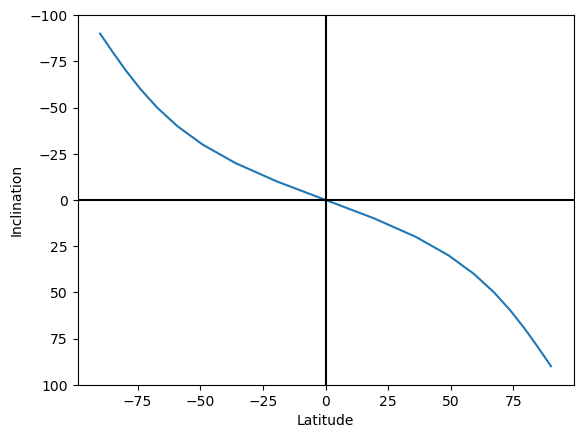
dipole_plat#
[Essentials Chapter 2] [command line version]
dipole_plat is similar to dipole_pinc but calculates the paleolatitude from the inclination. We will call pmag.plat():
help(pmag.plat)
Help on function plat in module pmagpy.pmag:
plat(inc)
Calculate paleolatitude from inclination using dipole formula: tan(I) = 2tan(lat).
Parameters
----------
inc : either a single value or an array of inclinations
Returns
-------
array of latitudes
Examples
--------
>>> incs = [63.4,59.2,73.9,85,-49.1,70.7]
>>> np.round(pmag.plat(incs))
array([ 45., 40., 60., 80., -30., 55.])
inc=42
pmag.plat(inc)
np.float64(24.237370383549177)
dir_cart#
[Essentials Chapter 2] [command line version]
pmag.dir2cart() converts directions (Declination, Inclination, Intensity) to cartesian coordinates (X,Y,Z).
help(pmag.dir2cart)
Help on function dir2cart in module pmagpy.pmag:
dir2cart(d)
Converts a list or array of vector directions in degrees (declination,
inclination) to an array of the direction in cartesian coordinates (x,y,z).
Parameters
----------
d : list or array of [dec,inc] or [dec,inc,intensity]
Returns
-------
cart : array of [x,y,z]
Examples
--------
>>> pmag.dir2cart([200,40,1])
array([-0.71984631, -0.26200263, 0.64278761])
>>> pmag.dir2cart([200,40])
array([[-0.719846310392954, -0.262002630229385, 0.642787609686539]])
>>> data = np.array([ [16.0, 43.0, 21620.33],
[30.5, 53.6, 12922.58],
[6.9, 33.2, 15780.08],
[352.5, 40.2, 33947.52],
[354.2, 45.1, 19725.45]])
>>> pmag.dir2cart(data)
array([[15199.574113612794 , 4358.407742577491 , 14745.029604010038 ],
[ 6607.405832448041 , 3892.0594770716 , 10401.304487835589 ],
[13108.574245285025 , 1586.3117853121191, 8640.591471770322 ],
[25707.154931463603 , -3384.411152593326 , 21911.687763162565 ],
[13852.355235322588 , -1407.0709331498472, 13972.322052043308 ]])
# read in data file from example file
dirs=np.loadtxt('data_files/dir_cart/dir_cart_example.dat')
print ('Input: \n',dirs) # print out the cartesian coordinates
# print out the results
carts = pmag.dir2cart(dirs)
print ("Output: ")
for c in carts:
print ('%8.4e %8.4e %8.4e'%(c[0],c[1],c[2]))
Input:
[[ 20. 46. 1.3]
[175. -24. 4.2]]
Output:
8.4859e-01 3.0886e-01 9.3514e-01
-3.8223e+00 3.3441e-01 -1.7083e+00
eigs_s#
[Essentials Chapter 13] [command line version]
This program converts eigenparameters to the six tensor elements. This is the inverse of s_eigs. There is a function ipmag.eigs_s() which will do this in a notebook:
help(ipmag.eigs_s)
Help on function eigs_s in module pmagpy.ipmag:
eigs_s(infile='', dir_path='.')
Converts eigenparamters format data to s format
Parameters:
Input:
file : input file name with eigenvalues (tau) and eigenvectors (V) with format:
tau_1 V1_dec V1_inc tau_2 V2_dec V2_inc tau_3 V3_dec V3_inc
Returns:
the six tensor elements as a nested array
[[x11,x22,x33,x12,x23,x13],....]
Ss=ipmag.eigs_s(infile="eigs_s_example.dat", dir_path='data_files/eigs_s')
for s in Ss:
print (s)
[np.float32(0.33416328), np.float32(0.33280227), np.float32(0.33303446), np.float32(-0.00016631071), np.float32(0.0012316267), np.float32(0.0013552071)]
[np.float32(0.33555713), np.float32(0.33197427), np.float32(0.3324687), np.float32(0.00085685047), np.float32(0.00025266458), np.float32(0.0009815096)]
[np.float32(0.335853), np.float32(0.33140355), np.float32(0.3327435), np.float32(0.0013230764), np.float32(0.0011778723), np.float32(4.5534102e-06)]
[np.float32(0.3347939), np.float32(0.33140817), np.float32(0.33379796), np.float32(-0.0004308845), np.float32(0.0004885784), np.float32(0.00045610438)]
[np.float32(0.33502916), np.float32(0.33117944), np.float32(0.3337915), np.float32(-0.00106313), np.float32(0.00029828132), np.float32(0.00035882858)]
[np.float32(0.33407047), np.float32(0.3322691), np.float32(0.33366045), np.float32(-6.384468e-06), np.float32(0.0009844461), np.float32(5.9963346e-05)]
[np.float32(0.33486328), np.float32(0.33215088), np.float32(0.3329859), np.float32(-0.0003427944), np.float32(0.00038177703), np.float32(0.0002014497)]
[np.float32(0.33509853), np.float32(0.33195898), np.float32(0.33294258), np.float32(0.000769761), np.float32(0.00056717254), np.float32(0.00011960149)]
eq_di#
[Essentials Appendix B] [command line version]
Data are frequently published as equal area projections and not listed in data tables. These data can be digitized as x,y data (assuming the outer rim is unity) and converted to approximate directions with the program eq_di. To use this program, install a graph digitizer (GraphClick from http://www.arizona-software.ch/graphclick/ works on Macs).
Digitize the data from the equal area projection saved in the file eqarea.png in the eq_di directory. You should only work on one hemisphere at a time (upper or lower) and save each hemisphere in its own file. Then you can convert the X,Y data to approximate dec and inc data - the quality of the data depends on your care in digitizing and the quality of the figure that you are digitizing.
Here we will try this out on a datafile already prepared, which are the digitized data from the lower hemisphere of a plot. You check your work with eqarea.
To do this in a notebook, we can use pmag.doeqdi().
help(pmag.doeqdi)
Help on function doeqdi in module pmagpy.pmag:
doeqdi(x, y, UP=False)
Takes digitized x,y, data and returns the dec,inc, assuming an
equal area projection.
Parameters
----------
x : array of digitized x from point on equal area projection
y : array of igitized y from point on equal area projection
UP : if True, is an upper hemisphere projection
Returns
-------
dec : declination
inc : inclination
# read in the data into an array
# x is assumed first column, y, second
xy=np.loadtxt('data_files/eq_di/eq_di_example.dat').transpose()
decs,incs=pmag.doeqdi(xy[0],xy[1])
ipmag.plot_net(1)
ipmag.plot_di(dec=decs,inc=incs,color='r',edge='black')
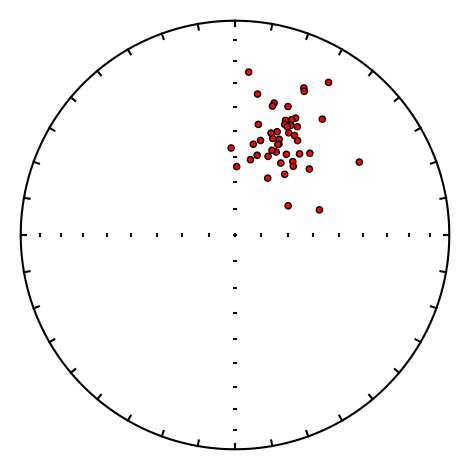
fcalc#
pmag.fcalc() returns the values of an F-test from an F table.
help(pmag.fcalc)
Help on function fcalc in module pmagpy.pmag:
fcalc(col, row)
Looks up an F-test stastic from F tables F(col,row), where row is number of degrees of freedom - this is 95% confidence (p=0.05).
Parameters
----------
col : degrees of freedom column
row : degrees of freedom row
Returns
-------
F : value for 95% confidence from the F-table
Examples
--------
>>> pmag.fcalc(3,4.8)
6.5915
fisher#
[Essentials Chapter 11] [command line version]
fisher draws \(N\) directions from a Fisher distribution with specified \(\kappa\) and a vertical mean. (For other directions see fishrot). To do this, we can just call the function pmag.fshdev() \(N\) times.
help(pmag.fshdev)
Help on function fshdev in module pmagpy.pmag:
fshdev(k, random_seed=None)
Generate a random draw from a Fisher distribution with mean declination
of 0 and inclination of 90 with a specified kappa.
Parameters
----------
k : single number or an array of values
kappa (precision parameter) of the distribution
random_seed : None, int, or numpy.random.Generator
Seed for reproducible random number generation (default is None).
Returns
-------
dec, inc : declination and inclination of random Fisher distribution draw
if k is an array, dec, inc are returned as arrays, otherwise, single values
Examples
--------
>>> pmag.fshdev(8)
(334.3434290469283, 61.06963783415771)
# set the number, N, and kappa
N,kappa=100,20
rng = np.random.default_rng(42)
# a basket to put our fish in
fish=[]
# get the Fisherian deviates
for i in range(N):
d,i=pmag.fshdev(kappa, random_seed=rng) # get a direction from a fisher distribution with specified kappa
fish.append([d,i])
ipmag.plot_net(1)
ipmag.plot_di(di_block=fish,color='r',edge='black')
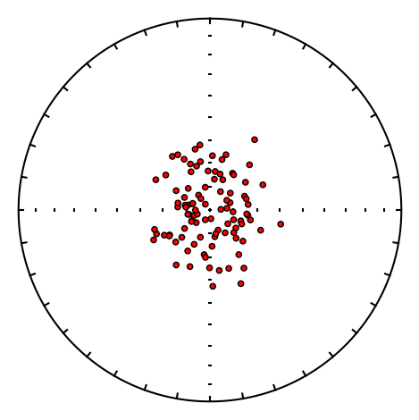
fishrot#
[Essentials Chapter 11] [command line version]
This program is similar to fisher, but allows you to specify the mean direction. This has been implemented as ipmag.fishrot().
help(ipmag.fishrot)
Help on function fishrot in module pmagpy.ipmag:
fishrot(k=20, n=100, dec=0, inc=90, di_block=True, random_seed=None)
Generates Fisher distributed unit vectors from a specified distribution
using the pmag.py function pmag.fshdev() and pmag.dodirot_V() functions.
Parameters:
k : kappa precision parameter (default is 20)
n : number of vectors to determine (default is 100)
dec : mean declination of distribution (default is 0)
inc : mean inclination of distribution (default is 90)
di_block : this function returns a nested list of [dec,inc,1.0] as the default
if di_block = False it will return a list of dec and a list of inc
random_seed : None, int, or numpy.random.Generator
Seed for reproducible random number generation (default is None).
Returns:
- di_block, a nested list of [dec,inc,1.0] (default)
- dec, inc, a list of dec and a list of inc (if di_block = False)
Examples:
>>> ipmag.fishrot(k=20, n=5, dec=40, inc=60)
array([[55.30451720381376 , 56.186057037482435, 1. ],
[25.593998008087908, 63.544360587984784, 1. ],
[29.263675539971246, 54.58964868129066 , 1. ],
[61.28572459596148 , 51.5004074156194 , 1. ],
[55.20784339888985 , 54.186746152272484, 1. ]])
rotdi=ipmag.fishrot(k=50,n=5,dec=33,inc=41, random_seed=47)
for di in rotdi:
print ('%7.1f %7.1f'%(di[0],di[1]))
24.7 41.5
27.5 45.6
46.3 41.2
24.0 25.4
31.5 42.8
ipmag.plot_net(1)
ipmag.plot_di(di_block=rotdi)
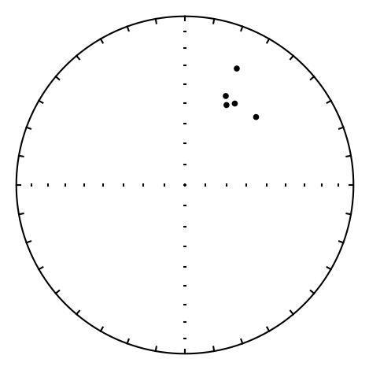
flip#
Fisher statistics requires unimodal data (all in one direction with no reversals) but many paleomagnetic data sets are bimodal. To flip bimodal data into a single mode, we can use pmag.flip( ). This function calculates the principle direction and flips all the ‘reverse’ data to the ‘normal’ direction along the principle axis.
help(pmag.flip)
Help on function flip in module pmagpy.pmag:
flip(di_block, combine=False)
Determines 'normal' direction along the principle eigenvector, then flips
the reverse mode to the antipode.
Parameters
----------
di_block : nested list of directions
combine : whether to return directions as one di_block (default is False)
Returns
-------
D1 : normal mode
D2 : flipped reverse mode as two DI blocks
If combine=True one combined D1 + D2 di_block will be returned
#read in the data into an array
vectors=np.loadtxt('data_files/eqarea_ell/tk03.out').transpose()
di_block=vectors[0:2].transpose() # decs are di_block[0], incs are di_block[1]
# flip the reverse directions to their normal antipodes
normal,flipped=pmag.flip(di_block)
# and plot them up
ipmag.plot_net(1)
ipmag.plot_di(di_block=di_block,color='red')
ipmag.plot_di(di_block=flipped,color='b')
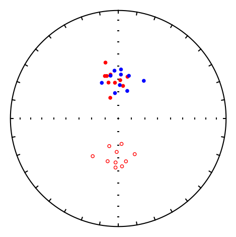
gaussian#
[Essentials Chapter 11] [command line version]
This program generates sets of data drawn from a normal distribution with a given mean and standard deviation. It is just a wrapper for a call to pmag.gaussdev() which just calls numpy.random.normal() which we could do, but we would have to import it, so it is easiest just to call the pmag version which we have already imported.
help(pmag.gaussdev)
Help on function gaussdev in module pmagpy.pmag:
gaussdev(mean, sigma, N=1, random_seed=None)
Generate random samples drawn from a Gaussian (normal) distribution.
This function samples from a normal distribution with a specified mean and
standard deviation, returning a NumPy array of length ``N``.
Parameters
----------
mean : float
Mean (center) of the normal distribution.
sigma : float
Standard deviation of the normal distribution.
N : int, optional
Number of random samples to generate. Defaults to 1.
random_seed : None, int, or numpy.random.Generator
Seed for reproducible random number generation (default is None).
Returns
-------
ndarray
NumPy array of length ``N`` containing random samples drawn from the
specified normal distribution. If ``N=1``, the returned array has shape
``(1,)``.
Notes
-----
This function is a thin convenience wrapper around ``numpy.random.normal``.
Its primary purpose is to provide a default of ``N=1`` and to ensure that
the return value is always a NumPy array, even when generating a single
sample. Pass an integer ``random_seed`` for reproducible results.
Examples
--------
Generate six samples from a normal distribution with mean 5.5 and standard
deviation 1.2:
>>> pmag.gaussdev(5.5, 1.2, 6, random_seed=42)
array([6.096056983613479, 5.334082838594578, 6.277226245720831,
7.327635827689631, 5.219015950331997, 5.219035651660984])
Generate a single sample:
>>> pmag.gaussdev(5.5, 1.2, 1, random_seed=42)
array([6.096056983613479])
N=1000
bins=100
norm=pmag.gaussdev(10,3,N)
plt.hist(norm,bins=bins,color='black',histtype='step',density=True)
plt.xlabel('Gaussian Deviates')
plt.ylabel('Frequency');
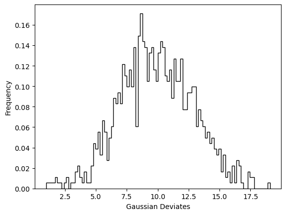
# alternatively we can plot with ipmag.histplot:
ipmag.histplot(data=norm, xlab='Gaussian Deviates', save_plots=False, norm=-1)
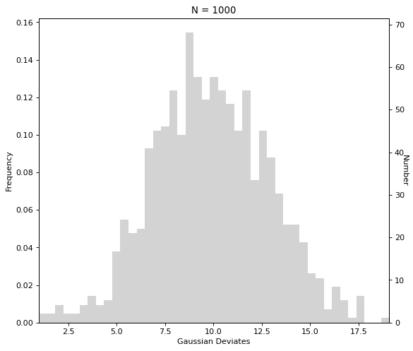
gobing#
[Essentials Chapter 12] [command line version]
gobing calculates Bingham statistics for sets of directional data (see the section for eqarea_ell in the PmagPy_plots_analysis documentation for nice examples). We do this by calling pmag.dobingham().
help(pmag.dobingham)
Help on function dobingham in module pmagpy.pmag:
dobingham(di_block)
Calculates the Bingham mean and associated statistical parameters from
directions that are input as a di_block.
Parameters
----------
di_block : a nested list of [dec,inc] or [dec,inc,intensity]
Returns
-------
bpars : dictionary containing the Bingham mean and associated statistics
dictionary keys
dec : mean declination
inc : mean inclination
n : number of datapoints
Eta : major ellipse
Edec : declination of major ellipse axis
Einc : inclination of major ellipse axis
Zeta : minor ellipse
Zdec : declination of minor ellipse axis
Zinc : inclination of minor ellipse axis
di_block=np.loadtxt('data_files/gobing/gobing_example.txt')
pmag.dobingham(di_block)
{'dec': np.float64(357.77952733337463),
'inc': np.float64(60.3168380083183),
'Edec': np.float64(105.71735145158068),
'Einc': np.float64(9.956900268236636),
'Zdec': np.float64(20.993890657557422),
'Zinc': np.float64(-27.64785355665155),
'n': 20,
'Zeta': np.float64(4.480026907803641),
'Eta': np.float64(4.4907543191720025)}
gofish#
[Essentials Chapter 11] [command line version]
gofish calculates Fisher statistics for sets of directional data. (see the section for eqarea_ell in the PmagPy_plots_analysis documentation for nice examples). This can be done with ipmag.fisher_mean().
help(ipmag.fisher_mean)
Help on function fisher_mean in module pmagpy.ipmag:
fisher_mean(dec=None, inc=None, di_block=None)
Calculates the Fisher mean and associated parameters from either a list of
declination values and a separate list of inclination values or from a
di_block (a nested list of [dec,inc,1.0]). Returns a dictionary with the
Fisher mean and statistical parameters.
Parameters:
dec : list of declinations or longitudes
inc : list of inclinations or latitudes
or
di_block : a nested list of [dec,inc,1.0]
A di_block can be provided instead of dec, inc lists in which case it
will be used. Either dec, inc lists or a di_block need to be provided.
Returns:
dictionary
Dictionary containing the Fisher mean parameters.
This dictionary can be printed in a more readable fashion using the
``ipmag.print_direction_mean()`` function if it is a directional mean or
``ipmag.print_pole_mean()`` function if it is a pole mean.
Examples:
Use lists of declination and inclination to calculate a Fisher mean:
>>> ipmag.fisher_mean(dec=[140,127,142,136],inc=[21,23,19,22])
{'alpha95': 7.292891411309177,
'csd': 6.4097743211340896,
'dec': 136.30838974272072,
'inc': 21.347784026899987,
'k': 159.69251473636305,
'n': 4,
'r': 3.9812138971889026}
Use a di_block to calculate a Fisher mean (will give the same output as the
example with the lists):
>>> ipmag.fisher_mean(di_block=[[140,21],[127,23],[142,19],[136,22]])
di_block=np.loadtxt('data_files/gofish/fishrot.out')
ipmag.fisher_mean(di_block=di_block)
{'dec': np.float64(10.78355298491744),
'inc': np.float64(39.60258299352024),
'n': 10,
'r': np.float64(9.848433230859508),
'k': np.float64(59.379770717798884),
'alpha95': np.float64(6.320446730051139),
'csd': np.float64(10.511525802823254)}
fisher mean on pandas DataFrames#
There is also a function pmag.dir_df_fisher_mean() that calculates Fisher statistics on a Pandas DataFrame with directional data
help(pmag.dir_df_fisher_mean)
Help on function dir_df_fisher_mean in module pmagpy.pmag:
dir_df_fisher_mean(dir_df)
Calculates fisher mean for Pandas dataframe.
Parameters
----------
dir_df: pandas data frame with columns:
dir_dec : declination
dir_inc : inclination
Returns
-------
fpars : dictionary containing the Fisher mean and statistics
dec : mean declination
inc : mean inclination
r : resultant vector length
n : number of data points
k : Fisher k value
csd : Fisher circular standard deviation
alpha95 : Fisher circle of 95% confidence
# make the data frame
dir_df=pd.read_csv('data_files/gofish/fishrot.out', sep=r"\s+", header=None)
dir_df.columns=['dir_dec','dir_inc']
pmag.dir_df_fisher_mean(dir_df)
{'dec': np.float64(10.78355298491744),
'inc': np.float64(39.60258299352024),
'n': 10,
'r': np.float64(9.848433230859508),
'k': np.float64(59.379770717798884),
'alpha95': np.float64(6.320446730051139),
'csd': np.float64(10.511525802823254)}
gokent#
[Essentials Chapter 12] [command line version]
With gokent we can calculate Kent statistics on sets of directional data (see the section for eqarea_ell in the PmagPy_plots_analysis documentation for nice examples).
This calls pmag.dokent() (see also eqarea_ell example)
help(pmag.dokent)
Help on function dokent in module pmagpy.pmag:
dokent(data, NN, distribution_95=False)
Gets Kent parameters for data.
Parameters
----------
data : nested pairs of [Dec,Inc]
NN : normalization
Number of data for Kent ellipse
NN is 1 for Kent ellipses of bootstrapped mean directions
distribution_95 : the default behavior (distribution_95=False) is for
the function to return the confidence region for the mean direction.
if distribution_95=True what instead will be returned is the parameters
associated with the region containing 95% of the directions.
Returns
-------
kpars dictionary keys
dec : mean declination
inc : mean inclination
n : number of datapoints
Zeta : major ellipse
Zdec : declination of major ellipse axis
Zinc : inclination of major ellipse axis
Eta : minor ellipse
Edec : declination of minor ellipse axis
Einc : inclination of minor ellipse axis
di_block=np.loadtxt('data_files/gokent/gokent_example.txt')
pmag.dokent(di_block,di_block.shape[0])
{'dec': np.float64(359.1530456710398),
'inc': np.float64(55.03341554254795),
'n': 20,
'Zdec': np.float64(147.699212872317),
'Zinc': np.float64(30.819395154843132),
'Edec': np.float64(246.82080930796928),
'Einc': np.float64(14.881429411175583),
'Zeta': np.float64(9.304659303299633),
'Eta': np.float64(7.805151237185053),
'R1': np.float64(0.9150521195141534),
'R2': np.float64(0.021518589451355)}
goprinc#
[Essentials Chapter 12] [command line version]
goprinc calculates the principal directions (and their eigenvalues) for sets of paleomagnetic vectors. It doesn’t do any statistics on them, unlike the other programs. We will call pmag.doprinc():
help(pmag.doprinc)
Help on function doprinc in module pmagpy.pmag:
doprinc(data)
Gets principal components from data in form of a list of [dec,inc,int] data.
Parameters
----------
data : nested list of dec, inc and optionally intensity vectors
Returns
-------
ppars : dictionary with the principal components
dec : principal direction declination
inc : principal direction inclination
V2dec : intermediate eigenvector declination
V2inc : intermediate eigenvector inclination
V3dec : minor eigenvector declination
V3inc : minor eigenvector inclination
tau1 : major eigenvalue
tau2 : intermediate eigenvalue
tau3 : minor eigenvalue
N : number of points
di_block=np.loadtxt('data_files/goprinc/goprinc_example.txt')
pmag.doprinc(di_block)
{'dec': np.float64(3.869443846664467),
'inc': np.float64(56.74015994191337),
'N': 20,
'tau1': np.float64(0.8778314142896242),
'tau2': np.float64(0.0712454004287624),
'tau3': np.float64(0.050923185281613534),
'V2dec': np.float64(151.8526173598416),
'V2inc': np.float64(29.078911691227454),
'V3dec': np.float64(250.25426093396385),
'V3inc': np.float64(14.721055437689317)}
igrf#
[Essentials Chapter 2] [command line version]
This program gives geomagnetic field vector data for a specified place at a specified time. It has many built in models including IGRFs, GUFM and several archeomagnetic models. It calls the function ipmag.igrf() for this so that is what we will do.
help(ipmag.igrf)
Help on function igrf in module pmagpy.ipmag:
igrf(input_list, mod='', ghfile='')
Determine declination, inclination and intensity from a geomagnetic
field model. The default model used is the IGRF model
(http://www.ngdc.noaa.gov/IAGA/vmod/igrf.html) with other
models available for selection with the available options detailed
in the mod parameter below.
Parameters:
input_list : list with format [Date, Altitude, Latitude, Longitude]
date must be in decimal year format XXXX.XXXX (Common Era)
altitude is in kilometers
mod : desired model
"" : Use the IGRF14 model by default
'custom' : use values supplied in ghfile
or choose from this list
['arch3k','cals3k','pfm9k','hfm10k','cals10k.2','cals10k.1b','shadif14','shawq2k','shawqIA','ggf100k']
where:
- arch3k (Korte et al., 2009)
- cals3k (Korte and Constable, 2011)
- cals10k.1b (Korte et al., 2011)
- pfm9k (Nilsson et al., 2014)
- hfm10k is the hfm.OL1.A1 of Constable et al. (2016)
- cals10k.2 (Constable et al., 2016)
- shadif14 (Pavon-Carrasco et al., 2014)
- shawq2k (Campuzano et al., 2019)
- shawqIA (Osete et al., 2020)
- ggk100k (Panovska et al., 2018)[only models from -99950 in 200 year increments allowed)
- the first four of these models, are constrained to agree
- with gufm1 (Jackson et al., 2000) for the past four centuries
gh : path to file with l m g h data
Returns:
igrf_array
array of magnetic field values (0: dec; 1: inc; 2: intensity (in nT))
Examples:
>>> local_field = ipmag.igrf([2013.6544, .052, 37.87, -122.27])
>>> local_field
array([1.431355648576314e+01, 6.148304376287219e+01, 4.899264739340517e+04])
>>> ipmag.igrf_print(local_field)
Declination: 14.314
Inclination: 61.483
Intensity: 48992.647 nT
We will calculate the field for San Diego from 3000 BCE to 1950 in 50 year increments using the hfm.OL1.A1 model of Constable et al. (2016, doi: 10.1016/j.epsl.2016.08.015).
# make a list of desired dates
dates=range(-3000,1950,50) # list of dates in +/- Common Era
mod = 'hfm10k' # choose the desired model
lat,lon,alt=33,-117,0 # desired latitude, longitude and alitude
Vecs=[] # list for Dec,Inc,Int outputs
for date in dates: # step through the dates
Vecs.append(ipmag.igrf([date,alt,lat,lon],mod=mod)) # append to list
vector_df = pd.DataFrame(Vecs) # make it into a Pandas dataframe
vector_df.columns=['dec','inc','int']
vector_df['vadms']=pmag.b_vdm(vector_df.int.values*1e-9, lat) # calculate the VADMs
vector_df['dec_adj']=vector_df['dec']
vector_df.loc[vector_df.dec>180,['dec_adj']]=vector_df.dec-360 # adjust declinations to be -180 => 180
fig=plt.figure(1,figsize=(7,9)) # set up the figure
fig.add_subplot(411) # make 4 rows of plots, this is the first
plt.plot(dates,vector_df.dec_adj) # plot the adjusted declinations
plt.ylabel('Declination ($^{\circ}$)')
plt.title('Geomagnetic field evaluated at Lat: '+str(lat)+' / Lon: '+str(lon))
fig.add_subplot(412) # this is the second
plt.plot(dates,vector_df.inc) # plot the inclinations
plt.ylabel('Inclination ($^{\circ}$)')
fig.add_subplot(413)
plt.plot(dates,vector_df.int*1e-3) # plot the intensites (in uT instead of nT)
plt.ylabel('Intensity ($\mu$T)')
fig.add_subplot(414) # plot the VADMs
plt.plot(dates,vector_df.vadms*1e-21) # plot as ZAm^2
plt.ylabel('VADM (ZAm$^2$)')
plt.xlabel('Dates (CE)');
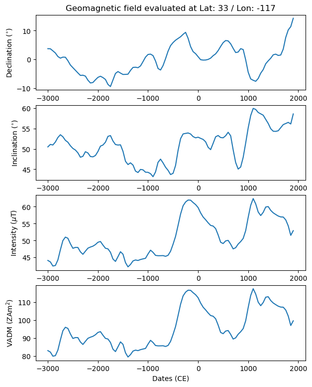
incfish#
[Essentials Chapter 11] [command line version]
You can’t get a meaningful average inclination from inclination only data because of the exponential relationship between inclinations and the true mean inclination for Fisher distributions (except exactly at the pole and the equator). So, McFadden and Reid (1982, doi: 10.1111/j.1365-246X.1982.tb04950.x) developed a maximum liklihood estimate for getting an estimate for true mean absent declination. pmag.doincfish() is an implementation of that concept.
help(pmag.doincfish)
Help on function doincfish in module pmagpy.pmag:
doincfish(inc)
Calculates Fisher mean inclination from inclination-only data. This function uses
the method of McFadden and Reid (1982), and incorporates asymmetric confidence limits
after McElhinny and McFadden (2000).
Parameters
----------
inc: list of inclination values
Returns
-------
dict
'n' : number of inclination values supplied
'ginc' : gaussian mean of inclinations
'inc' : estimated Fisher mean
'r' : estimated Fisher R value
'k' : estimated Fisher kappa
'alpha95': estimated confidence limit
'upper_confidence_limit' : estimated upper confidence limit of inclination
'lower_confidence_limit' : estimated lower confidence limit of inclination
'csd' : estimated circular standard deviation
Examples
--------
>>> pmag.doincfish([62.4, 61.6, 50.2, 65.2, 53.2, 61.4, 74.0, 60.0, 52.6, 71.8])
{'n': 10,
'ginc': 61.239999999999995,
'inc': 62.18,
'r': 9.828974184785405,
'k': 52.623634558953846,
'upper_confidence_limit': 66.49823541535572,
'lower_confidence_limit': 55.9733682324565,
'alpha95': 5.2624335914496125,
'csd': 11.165922232016465}
incs=np.loadtxt('data_files/incfish/incfish_example_inc.dat')
pmag.doincfish(incs)
{'n': 100,
'ginc': np.float64(57.135),
'inc': np.float64(61.019999999999996),
'r': np.float64(92.89193554711326),
'k': np.float64(13.927842193354618),
'upper_confidence_limit': np.float64(61.90782904247381),
'lower_confidence_limit': np.float64(52.50536129487992),
'alpha95': np.float64(4.701233873796946),
'csd': np.float64(21.704165888675153)}
pca#
[Essentials Chapter 11] [command line version]
pca calculates best-fit lines, planes or Fisher means through selected treatment steps along with Kirschvink (1980, doi: 10.1111/j.1365-246X.1980.tb02601.x) MAD values. The file format is a simple space delimited file with specimen name, treatment step, intensity, declination and inclination. pca.py calls pmag.domean(), so that is what we will do here.
help(pmag.domean)
Help on function domean in module pmagpy.pmag:
domean(data, start, end, calculation_type)
Gets average direction using Fisher or principal component analysis (line or plane) methods.
Parameters
----------
data : nest list of data
eg. [[treatment,dec,inc,int,quality],...]
start : step being used as start of fit (often temperature minimum)
end : step being used as end of fit (often temperature maximum)
calculation_type : string describing type of calculation to be made
'DE-BFL' (line), 'DE-BFL-A' (line-anchored), 'DE-BFL-O' (line-with-origin),
'DE-BFP' (plane), 'DE-FM' (Fisher mean)
Returns
-------
mpars : dictionary
The keys within are "specimen_n","measurement_step_min", "measurement_step_max","specimen_mad","specimen_dec","specimen_inc".
# read in data as space delimited file
data=pd.read_csv('data_files/pca/pca_example.txt',\
sep=r"\s+", header=None)
# we need to add a column for quality
data['quality']='g'
# strip off the specimen name and reorder records
# from: int,dec,inc to: dec,inc,int
data=data[[1,3,4,2,'quality']].values.tolist()
pmag.domean(data,1,10,'DE-BFL')
{'calculation_type': 'DE-BFL',
'center_of_mass': [np.float64(1.9347888195464598e-05),
np.float64(-2.1736620227095438e-05),
np.float64(2.5042313896882542e-05)],
'specimen_direction_type': 'l',
'specimen_dec': np.float64(334.9058336155927),
'specimen_inc': np.float64(51.50973235790524),
'specimen_mad': np.float64(8.753700501600127),
'specimen_n': 10,
'specimen_dang': np.float64(19.25778310076916),
'measurement_step_min': 2.5,
'measurement_step_max': 70.0}
pt_rot#
[Essentials Chapter 16] [Essentials Appendix A.3.5] [command line version]
This program finds rotation poles for a specified location, age and destination plate, then rotates the point into the destination plate coordinates using the roations and methods described in Essentials Appendix A.3.5.
This can be done for you using the function frp.get_pole() in the finite rotation pole module called pmagpy.frp. You then call pmag.pt_rot() to do the rotation. Let’s do this for to rotate the Cretaceous poles from Europe (sane data as in the polemap_magic example) and rotate them to South African coordinates.
# need to load this special module
import pmagpy.frp as frp
help(frp.get_pole)
Help on function get_pole in module pmagpy.frp:
get_pole(continent, age)
returns rotation poles and angles for specified continents and ages
assumes fixed Africa.
Parameters
__________
continent :
aus : Australia
eur : Eurasia
mad : Madacascar
[nwaf,congo] : NW Africa [choose one]
col : Colombia
grn : Greenland
nam : North America
par : Paraguay
eant : East Antarctica
ind : India
[neaf,kala] : NE Africa [choose one]
[sac,sam] : South America [choose one]
ib : Iberia
saf : South Africa
Returns
_______
[pole longitude, pole latitude, rotation angle] : for the continent at specified age
Prot=frp.get_pole('eur',100)
Prot
[40.2, -12.5, 28.5]
help(pmag.pt_rot)
Help on function pt_rot in module pmagpy.pmag:
pt_rot(EP, Lats, Lons)
Rotates points on a globe by an Euler pole rotation using method of
Cox and Hart 1986, box 7-3.
Parameters
----------
EP : Euler pole list [lat,lon,angle] specifying the location of the pole;
the angle is for a counterclockwise rotation about the pole
Lats : list of latitudes of points to be rotated
Lons : list of longitudes of points to be rotated
Returns
-------
RLats : list of rotated latitudes
RLons : list of rotated longitudes
data=pd.read_csv('data_files/polemap_magic/locations.txt',sep='\t',header=1)
lats=data['pole_lat'].values
lons=data['pole_lon'].values
RLats,RLons=rot_pts=pmag.pt_rot(Prot,lats,lons)
And now we can plot them using pmagplotlib.plot_map()
Opts={}
Opts['sym']='wo' # sets the symbol
Opts['symsize']=10
Opts['proj']='ortho'
Opts['edge']='black'
Opts['lat_0']=90
Opts['details']={}
Opts['details']['fancy']=True # warning : this option takes a few minutes
if has_cartopy:
plt.figure(1,(6,6)) # optional - make a map
pmagplotlib.plot_map(1, RLats, RLons, Opts)
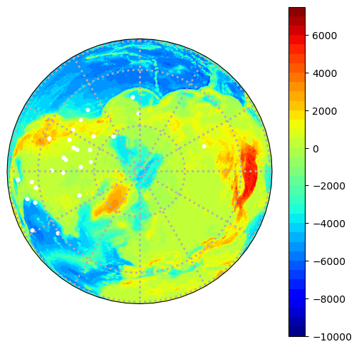
s_eigs#
[Essentials Chapter 13] [command line version]
This program converts the six tensor elements to eigenparameters - the inverse of eigs_s.
We can call the function pmag.doseigs() from the notebook.
help(pmag.doseigs)
Help on function doseigs in module pmagpy.pmag:
doseigs(s)
Convert s format for eigenvalues and eigenvectors.
Parameters
----------
s : the six tensor elements as a list
(s=[x11,x22,x33,x12,x23,x13])
Returns
-------
A three element array and a nested list of dec, inc pairs
tau : three element array ([t1,t2,t3])
tau is an list of eigenvalues in decreasing order:
V : second array ([[V1_dec,V1_inc],[V2_dec,V2_inc],[V3_dec,V3_inc]])
is an list of the eigenvector directions
Examples
--------
>>> pmag.doseigs([1,2,3,4,5,6])
([2.021399, -0.33896524, -0.6824337],
[[44.59696385583322, 40.45122920806129],
[295.4500678147439, 21.04129013670037],
[185.0807541485627, 42.138918019674385]])
Ss=np.loadtxt('data_files/s_eigs/s_eigs_example.dat')
for s in Ss:
tau,V=pmag.doseigs(s)
print ('%f %8.2f %8.2f %f %8.2f %8.2f %f %8.2f %8.2f'%\
(tau[2],V[2][0],V[2][1],tau[1],V[1][0],V[1][1],tau[0],V[0][0],V[0][1]))
0.331272 239.53 44.70 0.333513 126.62 21.47 0.335215 19.03 37.54
0.331779 281.12 6.18 0.332183 169.79 73.43 0.336039 12.82 15.32
0.330470 283.57 27.30 0.333283 118.37 61.91 0.336247 16.75 6.13
0.331238 261.36 12.07 0.333776 141.40 66.82 0.334986 355.70 19.48
0.330857 255.71 7.13 0.333792 130.85 77.65 0.335352 346.97 10.03
0.331759 268.51 26.79 0.334050 169.66 16.95 0.334190 51.04 57.53
0.331950 261.59 20.68 0.333133 92.18 68.99 0.334917 352.93 3.54
0.331576 281.42 21.32 0.333121 117.04 67.94 0.335303 13.54 5.41
s_geo#
[Essentials Chapter 13] [command line version]
s_geo takes the 6 tensor elements in specimen coordinates and applies the rotation similar to di_geo. To do this we will call pmag.dosgeo() from within the notebook.
help(pmag.dosgeo)
Help on function dosgeo in module pmagpy.pmag:
dosgeo(s, az, pl)
Rotates matrix a to its azimuth and plunge.
Parameters
----------
s : [x11,x22,x33,x12,x23,x13] - the six tensor elements
az : the azimuth of the specimen X direction
pl : the plunge (inclination) of the specimen X direction
Returns
-------
s_rot : [x11,x22,x33,x12,x23,x13] after rotation
Examples
--------
>>> pmag.dosgeo([0.33586472,0.32757074,0.33656454,0.0056526,0.00449771,-0.00036542],12,33)
array([ 0.33509237 , 0.3288845 , 0.33602312 , 0.0038898108,
0.0066036563, -0.0018823999], dtype=float32)
Ss=np.loadtxt('data_files/s_geo/s_geo_example.dat')
for s in Ss:
print(pmag.dosgeo(s[0:6],s[6],s[7]))
[ 3.3412680e-01 3.3282733e-01 3.3304587e-01 -1.5288725e-04
1.2484333e-03 1.3572115e-03]
[3.3556300e-01 3.3198264e-01 3.3245432e-01 8.7258930e-04 2.4140846e-04
9.6166186e-04]
[3.3584908e-01 3.3140627e-01 3.3274469e-01 1.3184461e-03 1.1881561e-03
2.9863901e-05]
[ 0.33479756 0.3314253 0.3337772 -0.0004749278
0.0004953921 0.00044302634]
[ 3.3505613e-01 3.3114848e-01 3.3379540e-01 -1.0137478e-03
2.8535718e-04 3.4851654e-04]
[ 3.3406156e-01 3.3226916e-01 3.3366925e-01 -2.2665596e-05
9.8547747e-04 5.5531069e-05]
[ 3.3486596e-01 3.3216032e-01 3.3297369e-01 -3.5492037e-04
3.9253550e-04 1.5402706e-04]
[3.3510646e-01 3.3196402e-01 3.3292958e-01 7.5965287e-04 5.7242444e-04
1.0112141e-04]
s_hext#
[Essentials Chapter 13] [command line version]
s_hext calculates Hext (1963, doi: 10.2307/2333905) statistics for anisotropy data in the six tensor element format.
It calls pmag.dohext().
help(pmag.dohext)
Help on function dohext in module pmagpy.pmag:
dohext(nf, sigma, s)
Calculates hext parameters for nf, sigma and s.
Parameters
----------
nf : number of degrees of freedom (measurements - 6)
sigma : the sigma of the measurements
s : [x11,x22,x33,x12,x23,x13] - the six tensor elements
Returns
-------
hpars : dictionary of Hext statistics with keys:
'F_crit' : critical value for anisotropy
'F12_crit' : critical value for tau1>tau2, tau2>3
'F' : value of F
'F12' : value of F12
'F23' : value of F23
'v1_dec': declination of principal eigenvector
'v1_inc': inclination of principal eigenvector
'v2_dec': declination of major eigenvector
'v2_inc': inclination of major eigenvector
'v3_dec': declination of minor eigenvector
'v3_inc': inclination of minor eigenvector
't1': principal eigenvalue
't2': major eigenvalue
't3': minor eigenvalue
'e12': angle of confidence ellipse of principal eigenvector in direction of major eigenvector
'e23': angle of confidence ellipse of major eigenvector in direction of minor eigenvector
'e13': angle of confidence ellipse of principal eigenvector in direction of minor eigenvector
If working with data set with no sigmas and the average is desired, use nf,sigma,avs=pmag.sbar(Ss) as input
Examples
--------
>>> pmag.dohext(30, 0.00027464, [0.33586472,0.32757074,0.33656454,0.0056526,0.00449771,-0.00036542])
{'F_crit': '2.5335',
'F12_crit': '3.3158',
'F': 820.3194287677485,
'F12': 74.97208429827333,
'F23': 1167.2979118918333,
'v1_dec': 38.360480228001826,
'v1_inc': 36.10621428141474,
'v2_dec': 183.62757676112915,
'v2_inc': 48.41031537341878,
'v3_dec': 294.8243200339332,
'v3_inc': 17.791534673908338,
't1': 0.33999866,
't2': 0.33663565,
't3': 0.3233657,
'e12': 6.002663418693858,
'e23': 1.5264872237415046,
'e13': 1.2179522275647792}
We are working with data that have no sigmas attached to them and want to average all the values in the file together. Let’s look at the rotated data from the s_geo example.
# read in the data
Ss=np.loadtxt('data_files/s_geo/s_geo_example.dat')
# make a container for the rotated S values
SGeos=[]
for s in Ss:
SGeos.append(pmag.dosgeo(s[0:6],s[6],s[7]))
nf,sigma,avs=pmag.sbar(SGeos) # get the average over all the data
hpars=pmag.dohext(nf,sigma,avs)
print(hpars)
{'F_crit': '2.4377', 'F12_crit': '3.2199', 'F': np.float32(5.787956), 'F12': np.float32(3.5510602), 'F23': np.float32(3.663558), 'v1_dec': np.float32(5.3308945), 'v1_inc': np.float32(14.682484), 'v2_dec': np.float32(124.47232), 'v2_inc': np.float32(61.71701), 'v3_dec': np.float32(268.75793), 'v3_inc': np.float32(23.599174), 't1': np.float32(0.33505273), 't2': np.float32(0.3333423), 't3': np.float32(0.33160502), 'e12': np.float64(25.45983486357493), 'e23': np.float64(25.114752726711885), 'e13': np.float64(13.289773606058292)}
s_magic#
NEED TO ADD THIS ONE….
s_tilt#
[Essentials Chapter 13] [command line version]
s_tilt takes the 6 tensor elements in geographic coordinates and applies the rotation similar to di_tilt into stratigraphic coordinates. It calls pmag.dostilt(). But be careful! s_tilt.py (the command line program) assumes that the bedding info is the strike, with the dip to the right of strike unlike pmag.dostilt which assumes that the azimuth is the dip direction.
help(pmag.dostilt)
Help on function dostilt in module pmagpy.pmag:
dostilt(s, bed_az, bed_dip)
Rotates "s" tensor to stratigraphic coordinates
Parameters
----------
s : [x11,x22,x33,x12,x23,x13] - the six tensor elements
bed_az : bedding dip direction
bed_dip : bedding dip
Returns
-------
s_rot : [x11,x22,x33,x12,x23,x13] - after rotation
Examples
--------
>>> pmag.dostilt([0.33586472,0.32757074,0.33656454,0.0056526,0.00449771,-0.00036542],20,38)
array([ 0.33473614 , 0.32911453 , 0.33614933 , 0.0075679934,
0.0020322995, -0.0014457355], dtype=float32)
# note that the data in this example are Ss and strike and dip (not bed_az,bed_pl)
Ss=np.loadtxt('data_files/s_tilt/s_tilt_example.dat')
for s in Ss:
print(pmag.dostilt(s[0:6],s[6]+90.,s[7])) # make the bedding azimuth dip direction, not strike.
[ 0.3345571 0.33192658 0.3335163 -0.00043562267
0.000927784 0.0010500584 ]
[ 3.3585498e-01 3.3191565e-01 3.3222932e-01 5.5958697e-04
-5.3170890e-05 6.4733403e-04]
[3.3586669e-01 3.3084920e-01 3.3328408e-01 1.4226423e-03 1.3233819e-04
9.2033930e-05]
[ 3.3488664e-01 3.3138493e-01 3.3372843e-01 -5.6598894e-04
-3.9086706e-04 4.8693797e-05]
[ 3.3506605e-01 3.3127019e-01 3.3366373e-01 -1.0519017e-03
-5.7259225e-04 -2.9954716e-04]
[3.3407688e-01 3.3177567e-01 3.3414751e-01 7.0047579e-05 1.8447425e-04
5.0721152e-05]
[ 3.3483922e-01 3.3197853e-01 3.3318222e-01 -2.8450627e-04
3.5190995e-05 -2.9263677e-04]
[ 3.3513144e-01 3.3175036e-01 3.3311823e-01 7.7917043e-04
-6.4000160e-05 4.6104553e-05]
scalc#
[Essentials Chapter 14] [command line version]
This program reads in data files with vgp_lon, vgp_lat and optional kappa, N, and site latitude. It allows some filtering based on the requirements of the study, such as:
Fisher k cutoff
VGP latitudinal cutoff
Vandamme (1994, doi: 10.1016/0031-9201(94)90012-4) iterative cutoff
flipping the reverse mode to antipodes
rotating principle direction to the spin axis
bootstrap confidence bounds
optionally calculates the scatter (Sp or Sf of McElhinny & McFadden, 1997) of VGPs with correction for within site scatter.
The filtering is just what Pandas was designed for, so we can calls pmag.scalc_vgp_df() which works on a suitably constructed Pandas DataFrame.
help(pmag.scalc_vgp_df)
Help on function scalc_vgp_df in module pmagpy.pmag:
scalc_vgp_df(vgp_df, anti=0, rev=0, cutoff=180.0, kappa=0, n=0, spin=0, v=0, boot=False, mm97=False, nb=1000, verbose=True, random_seed=None)
Calculates Sf for a dataframe with VGP Lat., and optional Fisher's k,
site latitude and N information can be used to correct for within site
scatter (McElhinny & McFadden, 1997)
Parameters
----------
vgp_df : Pandas Dataframe with columns
REQUIRED:
vgp_lat : VGP latitude
ONLY REQUIRED for MM97 correction:
dir_k : Fisher kappa estimate
dir_n_samples : number of samples per site
lat : latitude of the site
mm97 : if True, will do the correction for within site scatter
OPTIONAL:
boot : if True. do bootstrap
nb : number of bootstraps, default is 1000
anti : Boolean
if True, take antipodes of reverse poles
spin : Boolean
if True, transform data to spin axis
rev : Boolean
if True, take only reverse poles
v : Boolean
if True, filter data with Vandamme (1994) cutoff
boot : Boolean
if True, use bootstrap for confidence 95% interval
mm97 : Boolean
if True, use McFadden McElhinny 1997 correction for S
nb : int
number of bootstrapped pseudosamples for confidence estimate
verbose : Boolean
if True, print messages
random_seed : None, int, or numpy.random.Generator, optional
Seed for reproducible bootstrap resampling (default None).
Returns
-------
N : number of VGPs used in calculation
S_B : S value
low : 95% confidence lower bound [0 if boot=0]
high : 95% confidence upper bound [0 if boot=0]
cutoff : cutoff used in calculation of S
To just calculate the value of S (without the within site scatter) we read in a data file and attach the correct headers to it depending on what is in it.
vgp_df=pd.read_csv('data_files/scalc/scalc_example.txt', sep=r"\s+", header=None)
if len(list(vgp_df.columns))==2:
vgp_df.columns=['vgp_lon','vgp_lat']
vgp_df['dir_k'],vgp_df['dir_n'],vgp_df['lat']=0,0,0
else:
vgp_df.columns=['vgp_lon','vgp_lat','dir_k','dir_n_samples','lat']
pmag.scalc_vgp_df
N,S_B,low,high,cutoff=pmag.scalc_vgp_df(vgp_df)
print(N, '%7.1f %7.1f ' % (S_B, cutoff))
100 21.8 180.0
To apply a cutoff for the Fisher k value, we just filter the DataFrame prior to calculating S_b. Let’s filter for kappa>50
N,S_B,low,high,cutoff=pmag.scalc_vgp_df(vgp_df,kappa=50)
print(N, '%7.1f %7.1f ' % (S_B, cutoff))
100 21.8 180.0
To apply the Vandamme (1994) approach, we set v to True
N,S_B,low,high,cutoff=pmag.scalc_vgp_df(vgp_df,v=True)
print(N, '%7.1f %7.1f ' % (S_B, cutoff))
89 15.2 32.3
To flip the “reverse” directions, we set anti to 1
N,S_B,low,high,cutoff=pmag.scalc_vgp_df(vgp_df,anti=True)
print(N, '%7.1f %7.1f ' % (S_B, cutoff))
flipping reverse
100 21.1 180.0
And, to do relative to the spin axis, set spin to True:
N,S_B,low,high,cutoff=pmag.scalc_vgp_df(vgp_df,spin=True)
print(N, '%7.1f %7.1f ' % (S_B, cutoff))
100 21.6 180.0
scalc_magic#
[Essentials Chapter 14] [command line version]
This program does the same thing as scalc, but reads in a MagIC formatted file. So, we can do that easy-peasy.
vgp_df=pd.read_csv('data_files/scalc_magic/sites.txt',sep='\t',header=1)
N,S_B,low,high,cutoff=pmag.scalc_vgp_df(vgp_df,anti=True)
print(N, '%7.1f %7.1f ' % (S_B, cutoff))
flipping reverse
21 17.3 180.0
vgp_df=pd.read_csv('data_files/scalc_magic/sites.txt',sep='\t',header=1)
N,S_B,low,high,cutoff=pmag.scalc_vgp_df(vgp_df,anti=True,spin=True)
print(N, '%7.1f %7.1f ' % (S_B, cutoff))
flipping reverse
21 16.8 180.0
separate_directions#
Like pmag.flip( ), pmag.separate_directions divides a directional data set into two modes. Unlike pmag.flip( ), it returns the two separate modes (e.g., normal and reverse)
help(pmag.separate_directions)
Help on function separate_directions in module pmagpy.pmag:
separate_directions(di_block)
Separates set of directions into two modes based on principal direction
Parameters
----------
di_block : block of nested dec,inc pairs
Returns
-------
mode_1_block,mode_2_block : two arrays of nested dec,inc pairs
#read in the data into an array
vectors=np.loadtxt('data_files/eqarea_ell/tk03.out').transpose()
di_block=vectors[0:2].transpose() # decs are di_block[0], incs are di_block[1]
# flip the reverse directions to their normal antipodes
normal,reverse=pmag.separate_directions(di_block)
# and plot them up
ipmag.plot_net(1)
ipmag.plot_di(di_block=normal,color='red')
ipmag.plot_di(di_block=reverse,color='b')
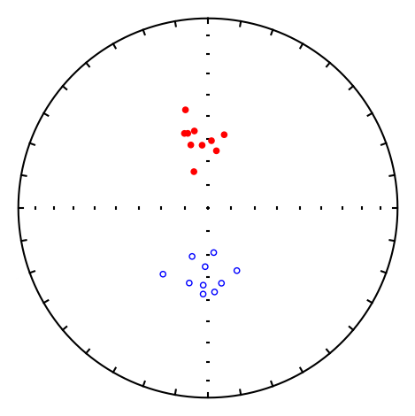
squish#
[Essentials Chapter 7] [command line version]
This program reads in dec/inc data and “squishes” the inclinations using the formula from King (1955, doi: 10.1111/j.1365-246X.1955.tb06558.x) \(\tan(I_o)=flat \tan(I_f)\). [See also unsquish]. We can call pmag.squish() from within the notebook.
help(pmag.squish)
Help on function squish in module pmagpy.pmag:
squish(incs, f)
Returns 'flattened' inclination, assuming factor, f and King (1955) formula:
tan (I_o) = f tan (I_f)
Parameters
----------
incs : array of inclination (I_f) data to flatten
f : flattening factor
Returns
-------
I_o : inclinations after flattening
di_block=np.loadtxt('data_files/squish/squish_example.dat').transpose()
decs=di_block[0]
incs=di_block[1]
flat=0.4
fincs=pmag.squish(incs,flat)
ipmag.plot_net(1)
ipmag.plot_di(dec=decs,inc=incs,title='Original',color='blue')
ipmag.plot_net(2)
ipmag.plot_di(dec=decs,inc=fincs,title='Squished',color='red')
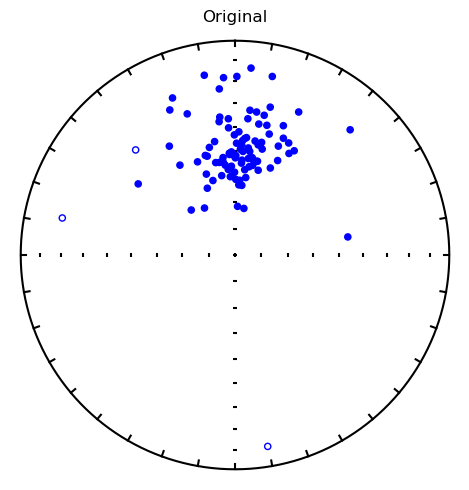
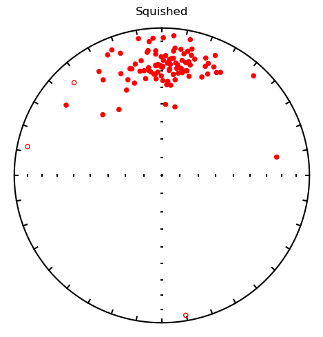
stats#
[Essentials Chapter 11] [command line version]
This program just calculates the N, mean, sum, sigma and sigma % for data. There are numerous ways to do that in Numpy, so let’s just use those.
data=np.loadtxt('data_files/gaussian/gauss.out')
print (data.shape[0],data.mean(),data.sum(),data.std())
100 9.949869990000002 994.9869990000001 0.9533644867617789
strip_magic#
[Essentials Chapter 15] [MagIC Database] [command line version]
We can do this easily using the wonders of Pandas and matplotlib as demonstrated here.
# read in the data
data=pd.read_csv('data_files/strip_magic/sites.txt',sep='\t',header=1)
# see what's there
data.columns
# you might have to use **df.dropna()** to clean off unwanted NaN lines or other data massaging
# but not for this example
Index(['site', 'location', 'age', 'age_unit', 'dir_dec', 'dir_inc',
'core_depth', 'lat', 'lon', 'geologic_classes', 'geologic_types',
'lithologies', 'citations', 'vgp_lat', 'vgp_lon', 'paleolatitude',
'vgp_lat_rev', 'vgp_lon_rev'],
dtype='str')
plt.figure(1,(10,4)) # make the figure
plt.plot(data.age,data.vgp_lat,'b-') # plot as blue line
plt.plot(data.age,data.vgp_lat,'ro',markeredgecolor="black") # plot as red dots with black rims
plt.xlabel('Age (Ma)') # label the time axis
plt.ylabel('VGP Lat.$^{\circ}$')
plt.ylim(-90,90) # set the plot limits
plt.axhline(color='black'); # put on a zero line
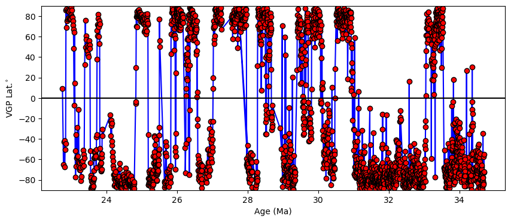
sundec#
[Essentials Chapter 9] [command line version]
Paleomagnetists often use the sun to orient their cores, especially if the sampling site is strongly magnetic and would deflect the magnetic compass. The information required is: where are you (e.g., latitude and longitude), what day is it, what time is it in Greenwhich Mean Time (a.k.a. Universal Time) and where is the sun (e.g., the antipode of the angle the shadow of a gnomon makes with the desired direction)?
This calculation is surprisingly accurate and is implemented in the function pmag.dosundec().
help(pmag.dosundec)
Help on function dosundec in module pmagpy.pmag:
dosundec(sundata)
Returns the declination for a given set of suncompass data.
Parameters
----------
sundata : dictionary with these keys:
date: time string with the format 'yyyy:mm:dd:hr:min'
delta_u: time to SUBTRACT from local time for Universal time
lat: latitude of location (negative for south)
lon: longitude of location (negative for west)
shadow_angle: shadow angle of the desired direction with respect to the sun.
Returns
-------
sunaz : the declination of the desired direction with respect to true north
Examples
--------
>>> sundata={'date':'1994:05:23:16:9','delta_u':3,'lat':35,'lon':33,'shadow_angle':68}
>>> pmag.dosundec(sundata)
154.24420046668928
Say you (or your elderly colleague) were located at 35°N and 33°E. The local time was three hours ahead of Universal Time. The shadow angle for the drilling direction was 68° measured at 16:09 on May 23, 1994. pmag.dosundec() requires a dictionary with the necessary information:
sundata={'delta_u':3,'lat':35,'lon':33,\
'date':'1994:05:23:16:9','shadow_angle':68}
print ('%7.1f'%(pmag.dosundec(sundata)))
154.2
tk03#
[Essentials Chapter 16] [command line version]
Sometimes it is useful to generate a distribution of synthetic geomagnetic field vectors that you might expect to find from paleosecular variation of the geomagnetic field. The program tk03 generates distributions of field vectors from the PSV model of Tauxe and Kent (2004, doi: 10.1029/145GM08). This program was implemented for notebook use as ipmag.tk03(). [See also find_ei].
help(ipmag.tk03)
Help on function tk03 in module pmagpy.ipmag:
tk03(n=100, dec=0, lat=0, rev='no', G1=-18000.0, G2=0, G3=0, B_threshold=0, random_seed=None)
Generates vectors drawn from the TK03.gad model of secular
variation (Tauxe and Kent, 2004) at given latitude and rotated
about a vertical axis by the given declination. Returns a nested list of
of [dec,inc,intensity].
Parameters
----------
n : number of vectors to determine (default is 100)
dec : mean declination of data set (default is 0)
lat : latitude at which secular variation is simulated (default is 0)
rev : if reversals are to be included this should be 'yes' (default is 'no')
G1 : specify average g_1^0 fraction (default is -18e3 in nT, minimum = 1)
G2 : specify average g_2^0 fraction (default is 0)
G3 : specify average g_3^0 fraction (default is 0)
B_threshold : return vectors with B>B_threshold (in nT) (default is 0 which
returns all vectors)
random_seed : None, int, or numpy.random.Generator
Seed for reproducible random number generation (default is None).
Returns
----------
tk_03_output : a nested list of declination, inclination, and intensity (in nT)
Examples
--------
>>> ipmag.tk03(n=5, dec=0, lat=0)
[[14.752502674158681, -36.189370642603834, 16584.848620957589],
[9.2859465437113311, -10.064247301056071, 17383.950391596223],
[2.4278460589582913, 4.8079990844938019, 18243.679003572055],
[352.93759572283585, 0.086693343935840397, 18524.551174838372],
[352.48366219759953, 11.579098286352332, 24928.412830772766]]
di_block=ipmag.tk03(lat=30, random_seed=42)
ipmag.plot_net(1)
ipmag.plot_di(di_block=di_block,color='red',edge='black')
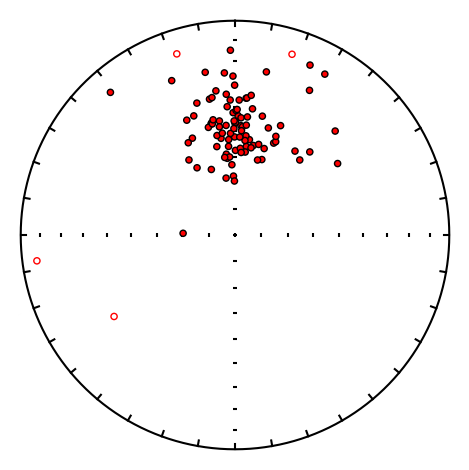
uniform#
It is at times handy to be able to generate a uniformly distributed set of directions (or geographic locations). This is done using a technique described by Fisher et al. (Fisher, N. I., Lewis, T., & Embleton, B. J. J. (1987). Statistical Analysis of Spherical Data. Cambridge: Cambridge University Press). We do this by calling pmag.get_unf().
help(pmag.get_unf)
Help on function get_unf in module pmagpy.pmag:
get_unf(N=100, random_seed=None)
Generates N uniformly distributed directions
using the way described in Fisher et al. (1987).
Parameters
----------
N : number of directions, default is 100
random_seed : None, int, or numpy.random.Generator
Seed for reproducible random number generation (default is None).
Returns
-------
array of nested dec, inc pairs
Examples
--------
>>> pmag.get_unf(5)
array([[ 62.916547703466684, -30.751721919151798],
[145.94851610484855 , 76.45636268514875 ],
[312.61910867788174 , -67.24338629811932 ],
[ 61.71574344812653 , -4.005335509042522],
[ 15.867001505749716, -1.404412703673322]])
di_block=pmag.get_unf()
ipmag.plot_net(1)
ipmag.plot_di(di_block=di_block,color='red',edge='black')
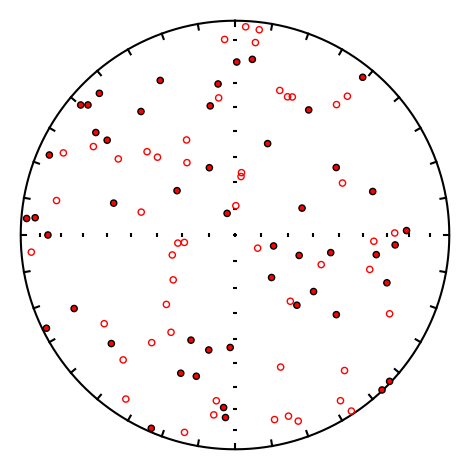
unsquish#
[Essentials Chapter 7] [Essentials Chapter 16] [command line version]
This program is just the inverse of squish in that it takes “squished” data and “unsquishes” them, assuming a King (1955, doi: 10.1111/j.1365-246X.1955.tb06558.x) relationship: \(\tan(I_o)=flat \tan(I_f)\). So, \(\tan(I_f) = \tan(I_o)/flat\).
It calls pmag.unquish().
dec = [132.5,124.3,142.7,130.3,163.2]
inc = [12.1,23.2,34.2,37.7,32.6]
dip_direction = [265.0,265.0,265.0,164.0,164.0]
dip = [20.0,20.0,20.0,72.0,72.0]
data_array = ipmag.make_diddd_array(dec,inc,dip_direction,dip)
ipmag.bootstrap_fold_test(data_array, random_seed=42)
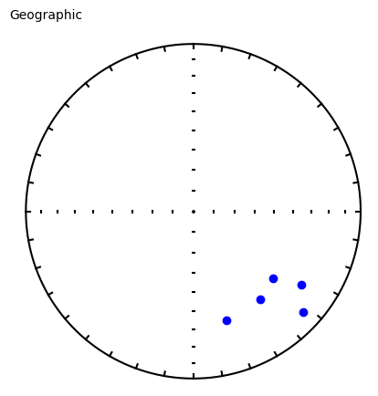
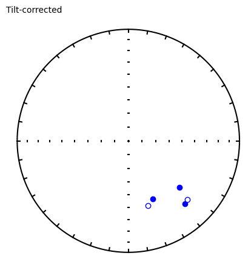
doing 1000 iterations...please be patient.....
tightest grouping of vectors obtained at (95% confidence bounds):
-1 - 34 percent unfolding
range of all bootstrap samples:
-10 - 108 percent unfolding
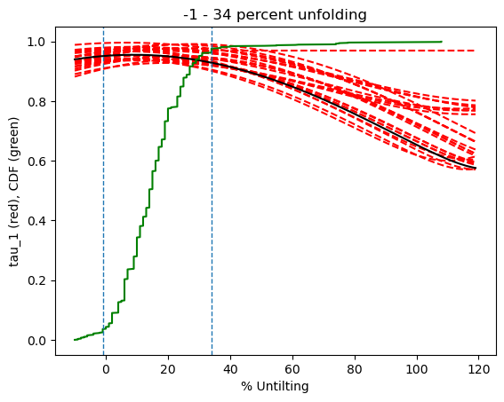
help(pmag.unsquish)
Help on function unsquish in module pmagpy.pmag:
unsquish(incs, f)
Restore (``unsquish``) inclinations using the King (1955) inclination-shallowing
correction.
King (1955) described the relationship between the inclination of a specimen’s
magnetization (:math:`I_o`, the *observed* inclination) and the inclination of
the field in which the magnetization was acquired (:math:`I_f`) as:
.. math::
\tan(I_o) = f \, \tan(I_f)
where :math:`f` is the flattening factor (:math:`0 < f \le 1`). When
:math:`f < 1`, the observed inclination is shallower than the original field
inclination due to compaction-related flattening.
This function inverts King's equation to estimate the original inclination from
observed inclinations:
.. math::
\tan(I_f) = \frac{\tan(I_o)}{f}
Parameters
----------
incs : array_like
One-dimensional list or NumPy array of observed inclinations (:math:`I_o`)
in degrees, typically measured from remanent magnetization directions.
f : float
Flattening factor (:math:`0 < f \le 1`). Values less than 1 indicate
inclination shallowing; smaller values correspond to stronger flattening.
Returns
-------
ndarray
NumPy array of ``unsquished_incs`` (restored inclinations) in degrees with
the same shape as ``incs``.
Examples
--------
Basic usage with a list of observed inclinations (degrees):
>>> incs = [63.4, 59.2, 73.9, 85.1, -49.1, 70.7]
>>> unsquished = pmag.unsquish(incs, 0.6)
>>> print(np.round(unsquished, 1))
[ 73.3 70.3 80.2 87.1 -62.5 78.1]
Loading inclinations from a data file where they are stored as the second column:
>>> directions = np.loadtxt('data_files/unsquish/unsquish_example.dat')
>>> incs = directions[:, 1] # extract the inclination column
>>> unsquished = pmag.unsquish(incs, 0.61)
>>> print(np.round(unsquished[:5], 1)) # show first 5 results
[33.5 30.5 22.7 40.6 33.7]
di_block=np.loadtxt('data_files/unsquish/unsquish_example.dat').transpose()
decs=di_block[0]
incs=di_block[1]
flat=.4
fincs=pmag.unsquish(incs,flat)
ipmag.plot_net(1)
ipmag.plot_di(dec=decs,inc=incs,title='Squished',color='red')
ipmag.plot_net(2)
ipmag.plot_di(dec=decs,inc=fincs,title='Unsquished',color='blue')
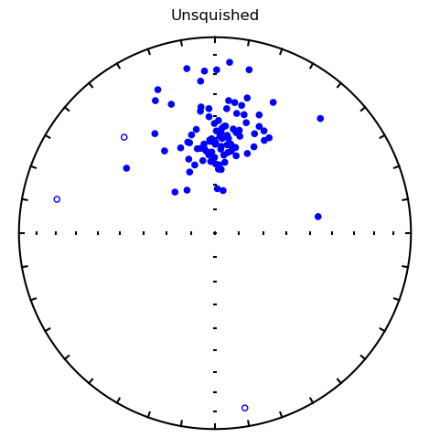
vdm_b#
[Essentials Chapter 2] [command line version]
vdm_b is the inverse of b_vdm in that it converts a virtual [axial] dipole moment (vdm or vadm) to a predicted geomagnetic field intensity observed at the earth’s surface at a particular (paleo)latitude. This program calls pmag.vdm_b().
help(pmag.vdm_b)
Help on function vdm_b in module pmagpy.pmag:
vdm_b(vdm, lat)
Converts a virtual dipole moment (VDM) or a virtual axial dipole moment
(VADM) to a local magnetic field value
Parameters
----------
vdm : V(A)DM in units of Am^2
lat: latitude of site in degrees
Returns
-------
B: local magnetic field strength in tesla
Examples
--------
>>> pmag.vdm_b(65, 20)
2.9215108300460446e-26
print ('%7.1f microtesla'%(pmag.vdm_b(7.159e22,22)*1e6))
33.0 microtesla
vector_mean#
[Essentials Chapter 2] [command line version]
vector_mean calculates the vector mean for a set of vectors in polar coordinates (e.g., declination, inclination, intensity). This is similar to the Fisher mean (gofish) but uses vector length instead of unit vectors. It calls calls pmag.vector_mean().
help(pmag.vector_mean)
Help on function vector_mean in module pmagpy.pmag:
vector_mean(data)
Calculates the vector mean of a given set of vectors.
Parameters
----------
data : nested array of [dec,inc,intensity]
Returns
-------
dir : array of [dec, inc, 1]
R : resultant vector length
Examples
--------
>>> data=np.loadtxt('data_files/vector_mean/vector_mean_example.dat')
>>> Dir,R=pmag.vector_mean(data)
>>> data.shape[0],Dir[0],Dir[1],R
(100, 1.2702459152657795, 49.62123008281823, 2289431.9813831896)
>>> data = np.array([[16.0, 43.0, 21620.33],
[30.5, 53.6, 12922.58],
[6.9, 33.2, 15780.08],
[352.5, 40.2, 33947.52],
[354.2, 45.1, 19725.45]])
>>> pmag.vector_mean(data)
(array([ 3.875568482416763, 43.02570375878505 , 1.]),
102107.93048882612)
data=np.loadtxt('data_files/vector_mean/vector_mean_example.dat')
Dir,R=pmag.vector_mean(data)
print (('%i %7.1f %7.1f %f')%(data.shape[0],Dir[0],Dir[1],R))
100 1.3 49.6 2289431.981383
vgp_di#
[Essentials Chapter 2] [command line version]
We use vgp_di to convert virtual geomagnetic pole positions to predicted directions at a given location. [See also di_vgp].
This program uses the function pmag.vgp_di().
help(pmag.vgp_di)
Help on function vgp_di in module pmagpy.pmag:
vgp_di(plat, plong, slat, slong)
Converts a pole position (pole latitude, pole longitude) to a direction
(declination, inclination) at a given location (slat, slong) assuming a
dipolar field.
Parameters
----------
plat : latitude of pole (vgp latitude)
plong : longitude of pole (vgp longitude)
slat : latitude of site
slong : longitude of site
Returns
-------
dec,inc : tuple of declination and inclination
d,i=pmag.vgp_di(68,191,33,243)
print ('%7.1f %7.1f'%(d,i))
335.6 62.9
watsons_f#
[Essentials Chapter 11] [command line version]
There are several different ways of testing whether two sets of directional data share a common mean. One popular (although perhaps not the best) way is to use Watson’s F test (Watson, 1956, doi: 10.1111/j.1365-246X.1956.tb05560.x). [See also watsons_v or Lisa Tauxe’s bootstrap way: common_mean].
If you still want to use Waston’s F, then try pmag.watsons_f() for this.
help(pmag.watsons_f)
Help on function watsons_f in module pmagpy.pmag:
watsons_f(DI1, DI2)
Calculates Watson's F statistic (equation 11.16 in Essentials text book).
Parameters
----------
DI1 : nested array of [Dec,Inc] pairs
DI2 : nested array of [Dec,Inc] pairs
Returns
-------
F : Watson's F
Fcrit : critical value from F table
Examples
--------
>>> D1= [[-45,150],[-40,150],[-38,145]]
>>> D2= [[-43,140],[-39,130],[-38,145]]
>>> pmag.watsons_f(D1,D2)
(3.7453156915587567, 4.459)
DI1=np.loadtxt('data_files/watsons_f/watsons_f_example_file1.dat')
DI2=np.loadtxt('data_files/watsons_f/watsons_f_example_file2.dat')
F,Fcrit=pmag.watsons_f(DI1,DI2)
print ('%7.2f %7.2f'%(F,Fcrit))
5.23 3.26